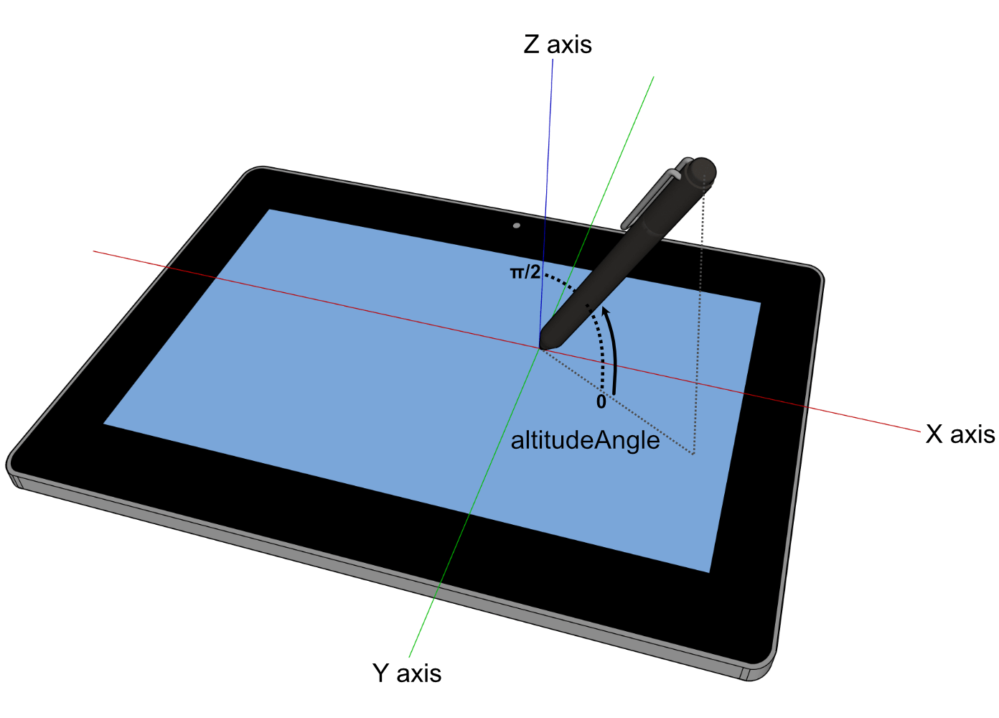
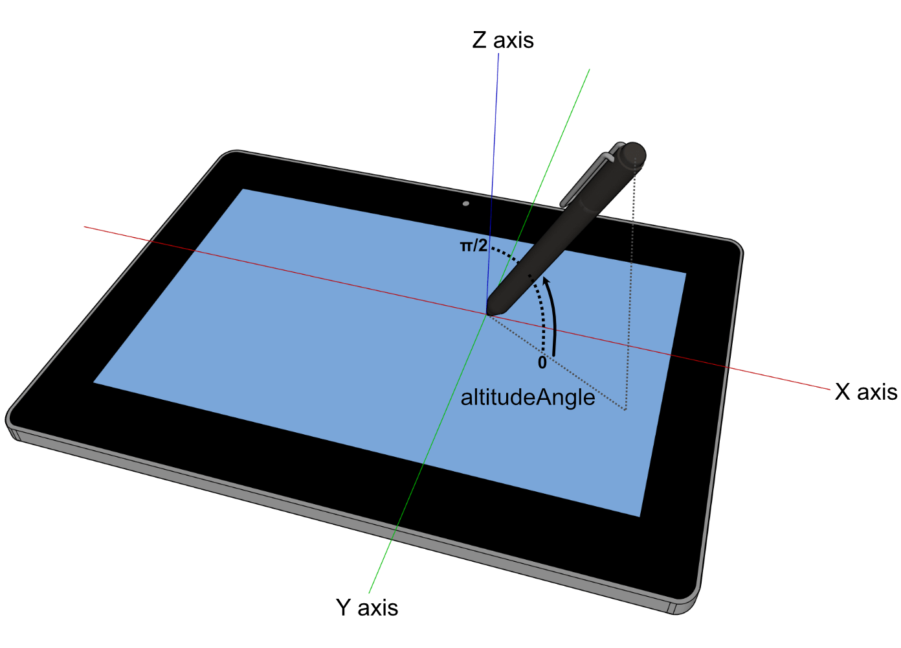

W3C 勧告である Pointer Events は、［
~mouse, ~pen, ~touchscreen, 等々を含む装置
］からの［
~hardwareに不問な~pointer入力
］を取扱うための~eventと関係する各種~interfaceについて述べている。
この仕様は、その勧告に見出される特能を拡張する／改変するものである。
また、既存の，~mouseを~~念頭に書かれた内容との互換性を得るため、他の型の~pointer装置による~eventから`~mouse~event$を発火するための対応付けについても述べる。
◎
The features in this specification extend or modify those found in Pointer Events, a W3C Recommendation that describes events and related interfaces for handling hardware agnostic pointer input from devices including a mouse, pen, touchscreen, etc. For compatibility with existing mouse based content, this specification also describes a mapping to fire Mouse Events for other pointer device types.
この仕様は、~level 2
— ［
Google Chrome, Microsoft Edge, Mozilla Firefox
］により広く出荷された `PointerEvents2$r
— に対する更新である。
この~level 3 は、編集上の明確化とともに
— より広い［
開発者／~browser
］からの採用を可能化することへ向けて —
より多くの利用事例を手助けする新たな特能を含む。
◎
This specification is an update to [PointerEvents2] which was shipped broadly by Google Chrome and Microsoft Edge and Mozilla Firefox. Level 3 includes editorial clarifications and new features that facilitate more use cases, in an effort to enable wider developer and browser adoption.
1. 序論
~INFORMATIVE
今日のほとんどの `HTML$r 内容は、~mouse入力~向けに利用され／設計されている。
入力を~custom方式で取扱う~codeは、概して `~mouse~event$向けに書かれている。
しかしながら，今日のより新たな~computing機器は、~touchscreen, ~pen入力, 等々も含む，他の形による入力も組入れている。
これらの入力~形の各々に対し，それを取扱うための~event型が個々に提案されてきている。
しかしながら，そのような~approachでは、新たな型の入力~用に~supportが追加される度に，不必要な~logicの重複や, ~eventの取扱いにおける~overheadも招かれ易くなる。
これはまた、内容が ある型の装置のみを念頭に書かれるときにも，互換性の問題を生じさせ易い。
加えて、~mouse用に書かれている既存の内容との互換性を得るため、ほとんどの`~UA$は，どの型の入力に対しても`~mouse~event$を発火する。
このため、`~mouse~event$が［
実際の~mouse装置を表現している
］のか, ［
別の型の入力~装置から，互換性を得るために生産されたもの
］なのか，多義的になり、双方の型の装置に対応する~codeを書くのも難しくなっている。
◎
Today, most [HTML] content is used with and/or designed for mouse input. Those that handle input in a custom manner typically code to [UIEVENTS] Mouse Events. Newer computing devices today, however, incorporate other forms of input, including touchscreens, pen input, etc. Event types have been proposed for handling each of these forms of input individually. However, that approach often incurs unnecessary duplication of logic and event handling overhead when adding support for a new input type. This often creates a compatibility problem when content is written with only one device type in mind. Additionally, for compatibility with existing mouse-based content, most user agents fire Mouse Events for all input types. This makes it ambiguous whether a Mouse Event represents an actual mouse device or is being produced from another input type for compatibility, which makes it hard to code to both device types simultaneously.
複数の入力~型に対応する~codeを書く手間を減らすため，および
上に述べた`~mouse~event$の多義性に~~対処し易くするため、この仕様は，`~pointer$と呼ばれる より抽象的な入力~形を定義する。
［
~mouse~cursor, ~pen, ~touch（複-~touchも含む）, その他
］の~pointing装置により ~screen上に入力される どの接触~点も，~pointerになり得る。
この~modelにより、利用者~側の~hardwareに関わらず，~siteや~appを上手く働くように書くことは、より容易になる。
装置に特有な取扱いが欲される局面においては、この仕様は，当の~eventを生産した装置の型を検分するための属性も定義する。
◎
To reduce the cost of coding to multiple input types and also to help with the above described ambiguity with Mouse Events, this specifications defines a more abstract form of input, called a pointer. A pointer can be any point of contact on the screen made by a mouse cursor, pen, touch (including multi-touch), or other pointing input device. This model makes it easier to write sites and applications that work well no matter what hardware the user has. For scenarios when device-specific handling is desired, this specification also defines properties for inspecting the device type which produced the event.＼
この仕様の首な目標は、［
装置に依らない~pointer入力に対応する著作は より容易にする
］一方で，［
利用者体験の~~向上に必要とされる所では 装置に特有な取扱いに限り許容する
］ような、一式の［
~event, および~interface
］を供することである。
◎
The primary goal is to provide a single set of events and interfaces that allow for easier authoring for cross-device pointer input while still allowing for device-specific handling only when necessary for an augmented experience.
~~第二の目標は、~UAが，［
`直な~pan-zoom$（一例として，~touchscreenに対し，手指や~stylusで）用の既定の動作
］を
— ~script実行を阻むことなく —
取扱えるよう，複-~thread化も可能化することである。
◎
An additional key goal is to enable multi-threaded user agents to handle default direct manipulation actions for panning and zooming (for instance, with a finger or stylus on a touchscreen), without blocking on script execution.
注記：
この仕様は、種々の~pointer入力~用に 統一された~event~modelを定義する。
~keyboardに類する~UIなど，他の形の入力は、この~modelは受持たない（一例として、~touchscreenのみの装置~上で稼働中の~screen~readerや類似な支援技術
— ~focus可能な［
~controlや要素
］を通して 利用者による逐次的な~naviを可能にするような）。
その種の~UIに呼応して~pointer~eventを生成する~UAもあるかもしれないが、それについては，この仕様は受持たない。
◎
Note
While this specification defines a unified event model for a variety of pointer inputs, this model does not cover other forms of input such as keyboards or keyboard-like interfaces (for instance, a screen reader or similar assistive technology running on a touchscreen-only device, which allows users sequential navigation through focusable controls and elements). While user agents might choose to also generate pointer events in response to these interfaces, this scenario is not covered in this specification.
注記：
作者には、まず~~第一に，どの形の入力に対しても
`focus$et, `blur$et, `click$et
などの高~levelな~eventで応答することで，等価な機能性を供することが奨励される。
しかしながら、低~levelな~event（`~pointer~event$など）を利用するときは、すべての型の入力~用の~supportを確保することが奨励される。
~keyboardに類する~UIの事例においては、これには，~keyboard~event用の明示的な取扱いの追加を要することもある。
詳細は、
WCAG 2.1
§ 指針 2.1：~keyboard~access可能
見よ。
◎
Note
In the first instance, authors are encouraged to provide equivalent functionality for all forms of input by responding to high-level events such as focus, blur and click. However, when using low-level events (such as Pointer Events), authors are encouraged to ensure that all types of input are supported. In the case of keyboards and keyboard-like interfaces, this might require the addition of explicit keyboard event handling. See WCAG Guideline 2.1 Keyboard Accessible for further details.
`martini_glass^dgm
~pointerは、~screen上の特定の座標（または座標の集合）を標的に捉えられる入力~装置の，~hardwareに不問な表現である。
◎
A pointer is a hardware agnostic representation of input devices that can target a specific coordinate (or set of coordinates) on a screen.
汎用~pointer入力を取扱うための~eventは、~mouse用のものとよく似る：
`pointerdown$et,
`pointermove$et,
`pointerup$et,
`pointerover$et,
`pointerout$et,
等々。
これにより、内容を，各種`~mouse~event$から`~pointer~event$へ移行するのも容易になる。
`~pointer~event$は、各種`~mouse~event$に在る通例の属性すべて（
~client座標, 標的~要素, ~button状態, 等々
）を供することに加え、他の形の入力
— 押圧（ `pressure^en ）, `接触~幾何$（ `contact geometry^en ）, 傾き（ `tilt^en ）, 等々 —
のための新たな属性も供する。
作者は、`~pointer~event$の~codeを，異なる【装置】型の入力~間で同じ~logicを共有するように書くことが容易になり、利用者体験の~~向上に必要とされる所に限って，特定0の型の入力を~custom化できる。
◎
The events for handling generic pointer input look a lot like those for mouse: pointerdown, pointermove, pointerup, pointerover, pointerout, etc. This facilitates easy content migration from Mouse Events to Pointer Events. Pointer Events provide all the usual properties present in Mouse Events (client coordinates, target element, button states, etc.) in addition to new properties for other forms of input: pressure, contact geometry, tilt, etc. So authors can easily code to Pointer Events to share logic between different input types where it makes sense, and customize for a particular type of input only where necessary to get the best experience.
様々な入力~装置が`~pointer~event$の源になり得るが、`~pointer~event$が，他の［
何らかの装置に特有な~eventの集合（例： 各種 `~mouse~event$, ~touch~event, 等々）
］に属する~eventに伴って生成されるものとして定義されることはない。
この仕様は、他の装置に特有な~eventの~supportは，要求しない。
そうすることもアリであり，互換性を得るために奨励されるが。
~UAは、他のどの装置~eventも~supportすることなく，~pointer~eventを~supportできる。
［
~mouseに特有な~event用に書かれた内容
］との互換性を得るため、この仕様は，［
~mouse以外の装置による~pointer入力に基づいて，`互換性~mouse~event$を生成する
］ための方法も述べる。
◎
While Pointer Events are sourced from a variety of input devices, they are not defined as being generated from some other set of device-specific events. While possible and encouraged for compatibility, this spec does not require other device-specific events be supported (e.g. mouse events, touch events, etc.). A user agent could support pointer events without supporting any other device events. For compatibility with content written to mouse-specific events, this specification does provide an optional section describing how to generate compatibility mouse events based on pointer input from devices other than a mouse.
この仕様は、［
`~pointer~event$,
`TOUCH-EVENTS$r に定義される~touch~event
］の両者を~supportする~UAに対し期待される挙動については，何も~~述べない。
これら二つの仕様の関係性についての更なる情報は、
Touch Events Community Group
を見よ。
◎
This specification does not provide any advice on the expected behavior of user agents that support both Touch Events (as defined in [TOUCH-EVENTS]) and Pointer Events. For more information on the relationship between these two specifications, see the Touch Events Community Group.
以下では、この仕様における一部の~APIを作者がどう利用し得るかをデモる基本的な例を与える。
さらには、より特定的な例も，この文書を成す関連な節に供される。
◎
The following are basic examples that demonstrates how some of the APIs in this specification might be used by authors. Further, more specific examples are provided in the relevant sections of this document.
`1@ex：
~pointer~event特能を検出して，~eventを~bindする：
◎
Example 1: Feature detection and event binding
/*
`~pointer~event$, または［
伝統的 ~touch／~mouse
］のいずれかを~bindする
◎
Bind to either Pointer Events or traditional touch/mouse
*/
if (window.PointerEvent) {
/*
`~pointer~event$が~supportされる場合は、~pointer~eventのみを~listenする
◎
if Pointer Events are supported, only listen to pointer events
*/
%target.addEventListener("pointerdown", function(%event) {
/*
必要とされるなら、 ~touch／~pen／~mouse に対する異なる挙動~用に，
%event`.pointerType^c
に基づいて，別々の~logicを適用する
◎
if necessary, apply separate logic based on e.pointerType for different touch/pen/mouse behavior
*/
...
});
...
} else {
/*
伝統的な ~touch／~mouse ~event~handler
◎
traditional touch/mouse event handlers
*/
%target.addEventListener('touchstart', function(%event) {
/*
互換性~mouse~eventと~clickを防止する
◎
prevent compatibility mouse events and click
*/
%event.preventDefault();
...
});
...
%target.addEventListener('mousedown', ...);
...
}
/*
~keyboardを取扱うための，追加的な~event~listener
◎
additional event listeners for keyboard handling
*/
...
`2@ex：
利用者による入力を検出する例：
◎
Example 2: Detecting the type of input from a user
window.addEventListener("pointerdown", %detectInputType);
function detectInputType(%event) {
switch(%event.pointerType) {
case "mouse":
/*
~mouse入力が検出された
◎
mouse input detected
*/
break;
case "pen":
/*
~penや~stylusからの入力が検出された
◎
pen/stylus input detected
*/
break;
case "touch":
/*
~touch入力が検出された
◎
touch input detected
*/
break;
case "":
/*
空~文字列は、~UAが検出できない装置を意味する
◎
↓ */
break;
default:
/*
~UAに特有な~custom型
◎
pointerType is empty (could not be detected) or UA-specific custom type
*/
}
}
`3@ex：
要素~sizeを`接触~幾何$に合わせる例：
◎
Example 3: Resizing an element to match the contact geometry
~eventを生じさせた~pointerを一意に識別する識別子。
この識別子は、その時点で，`~top-level閲覧文脈$ `HTML$r において`作動中の~pointer$すべての中で一意になるモノトスル。
◎
A unique identifier for the pointer causing the event. This identifier MUST be unique from all other active pointers in the top-level browsing context (as defined by [HTML]) at the time.＼
この属性の値 −1 は、~eventは~pointing装置~以外の何かから生成されたことを指示するものとして，予約される。
◎
The pointerId value of -1 is reserved to indicate events that were generated by something other than a pointing device.＼
~UAは、［
以前に`作動中$であった~pointerによる使われなくなった値
］を，必要に応じて この属性の値に~~再利用してもヨイ。
◎
A user agent MAY recycle previously retired values for pointerId from previous active pointers, if necessary.
注記：
`pointerId$m の選定~algoは，実装に特有なので、作者は，この値を［
上の意味で一意であること以外の意味を~~伝える
］ものとは見做せない。
例として，~UAは、単純に［
どの~pointerにも，作動中になった順に 1 から開始する数をアテガってもヨイ
］が，これらの値が単調増加することは保証されない。
あるいは，［
作動中の各~pointerに，完全に~randomかつ, 一意な数をアテガってもヨイ
］が、この局面においては，~UAは、［
異なる~pageにわたり，利用者が一意に指紋収集され, 追跡される可能性
］を最小限にするため，［
異なる~pageに同じ `pointerId$m 値を使い回さないこと
］, および［
新たな `pointerId$m 値は どれも予測-不能になること（暗号的に強い~randomさで生成するなど）
］を確保するモノトスル。
◎
Note
The pointerId selection algorithm is implementation specific. Therefore authors cannot assume values convey any particular meaning other than an identifier for the pointer that is unique from all other active pointers. As an example, user agents may simply assign a number, starting from 1, to any active pointers, in the order that they become active - but these values are not guaranteed to be monotonically increasing. Other user agents may opt to assign a completely randomized and unique number to each active pointer. However, in the latter scenarios user agents MUST ensure that the pointerId that is assigned remains the same only for the lifetime of the current page, and that any new pointerId values are not predictable (e.g. generated randomly with cryptographically strong randomness), to minimize the possibility of users being uniquely fingerprinted and tracked across different pages.
`width@m
`height@m
順に、~pointerの`接触~幾何$の横幅, 縦幅（ X, Y 軸~上の大きさ）を~CSS~pixel数（ `CSS21$r ）で表す。
この値は、所与の~pointer用の各~eventごとに更新されてもヨイ。
［
概して`接触~幾何$を欠く入力（伝統的な~mouseなど） ／
実際の幾何が~hardwareにより検出されない入力
］に対しては、~UAは，既定の値として 1 を返すモノトスル。
◎
The width (magnitude on the X axis), in CSS pixels (see [CSS21]), of the contact geometry of the pointer. This value MAY be updated on each event for a given pointer. For inputs that typically lack contact geometry (such as a traditional mouse), and in cases where the actual geometry of the input is not detected by the hardware, the user agent MUST return a default value of 1.
◎
The height (magnitude on the Y axis), in CSS pixels (see [CSS21]), of the contact geometry of the pointer. This value MAY be updated on each event for a given pointer. For inputs that typically lack contact geometry (such as a traditional mouse), and in cases where the actual geometry of the input is not detected by the hardware, the user agent MUST return a default value of 1.
`pressure@m
~pointer入力による，範囲 [0, 1] に正規化された押圧。
値［
0 ／ 1
］は、~hardwareが検出できる［
最小／最大
］の押圧を表現する。
~hardwareや~platformが押圧を~supportしないときの値は、［
~buttonが`作動~状態$にあるなら 0.5 ／
~ELSE_ 0
］を返すモノトスル。
◎
The normalized pressure of the pointer input in the range of [0,1], where 0 and 1 represent the minimum and maximum pressure the hardware is capable of detecting, respectively. For hardware and platforms that do not support pressure, the value MUST be 0.5 when in the active buttons state and 0 otherwise.＼
`pointerup$et ~eventに対しては、 `pressure$m は常に 0 にされることに注意。
◎
Note: all pointerup events will have pressure 0.
`tangentialPressure@m
範囲 [−1, 1] に正規化された，~pointer入力の接線方向~圧†（ ~barrel圧としても周知）。
概して，追加的な制御により設定される（例： ~airbrush~stylus上の手指~wheelなど）。
値 0 は、中立な位置を指す。
~hardwareによっては，範囲 [0, 1] に入る正な値しか~supportしないものもあることに注意。
~hardwareや~platformが接線方向~圧を~supportしないときは、 0 を返すモノトスル。
◎
The normalized tangential pressure (also known as barrel pressure), typically set by an additional control (e.g. a finger wheel on an airbrush stylus), of the pointer input in the range of [-1,1], where 0 is the neutral position of the control. Note that some hardware may only support positive values in the range of [0,1]. For hardware and platforms that do not support tangential pressure, the value MUST be 0.
`~digitizer$の Y-Z 平面と, ［
~transducer（例：~penや~stylus）軸と Y 軸を包含する平面
］がなす角度。
値の範囲は [−90°, 90°]。
正な `tiltX$m は、~transducer軸が右側に傾いていることを表す。
絶対~値が大きいほど，~transducer軸が~digitizer面の法線から離れていることを表す。
◎
The plane angle (in degrees, in the range of [-90,90]) between the Y-Z plane and the plane containing both the transducer (e.g. pen/stylus) axis and the Y axis. A positive tiltX is to the right. tiltX can be used along with tiltY to represent the tilt away from the normal of a transducer with the digitizer.＼
~hardwareや~platformが［
傾き／角度
］を報告しないときの値は、 0 になるモノトスル。
◎
For hardware and platforms that do not report tilt or angle, the value MUST be 0.
【
標的~要素に対する変形（回転など）が X, Y 軸の解釈に影響し得るのか,
どう影響するのかについては、この仕様には述べられていない。
】
`tiltX^dgm
正な `tiltX$m 。
◎
Positive tiltX.
`tiltY@m
~X-Z平面と, ［
~transducer（例：~penや~stylus）軸と X 軸を包含する平面
］がなす，範囲 [−90°, 90°] に入る角度。
正な `tiltY$m は、~transducer軸が利用者~側に傾いている†ことを表す。
絶対~値が大きいほど，~transducer軸が~digitizer面の法線から離れていることを表す。
◎
The plane angle (in degrees, in the range of [-90,90]) between the X-Z plane and the plane containing both the transducer (e.g. pen/stylus) axis and the X axis. A positive tiltY is towards the user. tiltY can be used along with tiltX to represent the tilt away from the normal of a transducer with the digitizer.＼
~hardwareや~platformが［
傾き／角度
］を報告しないときの値は、 0 になるモノトスル。
◎
For hardware and platforms that do not report tilt or angle, the value MUST be 0.
【†
図が紛らわしいが、下の図の Y 軸の反対~方向。
GUI の文脈にて通例的な Y 軸の向き（ ~screenの下方向が正な向き）においては、正な方向。
】
`tiltY^dgm
負な `tiltY$m 。
◎
Negative tiltY.
`twist@m
~transducer（例：~penや~stylus）自身の~~主~軸~周りにおける
— 時計回りで範囲 [0°, 359°] に入る —
回転~角度。
◎
The clockwise rotation (in degrees, in the range of [0,359]) of a transducer (e.g. pen/stylus) around its own major axis.＼
~hardwareや~platformが~twist【ひねり？】を報告しないときの値は、 0 になるモノトスル。
◎
For hardware and platforms that do not report twist, the value MUST be 0.
`altitudeAngle@m
~transducer（例：~penや~stylus）の仰角
— ~radianで，範囲 [0, π/2] に入るようにされた。
0 は物理面（~X-Y平面）に平行, π/2 は物理面に垂直なことを表す。
~hardwareや~platformが［
傾き／角度
］を報告しないときの値は、 π/2 になるモノトスル。
◎
The altitude (in radians) of the transducer (e.g. pen/stylus), in the range [0,π/2] - where 0 is parallel to the surface (X-Y plane), and π/2 is perpendicular to the surface. For hardware and platforms that do not report tilt or angle, the value MUST be π/2.
注記：
ここで定義される，傾きや角度を報告しないときの既定の値 π/2 は、
Touch Events, ~level 2
仕様にて
`altitudeAngle^m
用に定義された既定の値 0 ではない。
これは、［
`tiltX$m, `tiltY$m
］用の（~hardwareや~platformがそれらを報告しないときの）既定の値 0 に相関するよう，~transducerを物理面に垂直に位置する。
◎
When the hardware or platform does not report the tilt or angle, as opposed to the default value of 0 defined for altitudeAngle in Touch Events - Level 2 specification, the default value defined here is π/2. This correlates with the default values of 0 for both tiltX and tiltY (when the hardware or platform do not report them) which positions the transducer as being perpendicular to the surface.
`altitudeAngle^dgm
`altitudeAngle^m が π/4 をとるとき（~X-Y平面から 45° ）。
◎
Figure 4 Example altitudeAngle of π/4 (45 degrees from the X-Y plane).
`azimuthAngle@m
~transducer（例：~penや~stylus）の方位角
— ~radianで，範囲 [0, π/2] に入るようにされた。
値 0 は，~transducerの頭頂が~X-Y平面~上で正な~X軸~方向（真上から見て “3時” の方向）を指していることを表現し、そこから時計回りに増大する（ π/2 なら “6時”, π なら “9時”, 3π/2 なら “12時” を指している）。
~transducerが物理面に垂直になったとき（ `altitudeAngle$m ~EQ π/2 ）の値は、 0 になるモノトスル。
~hardwareや~platformが［
傾き／角度
］を報告しないときの値は、 0 になるモノトスル。
◎
The azimuth angle (in radians) of the transducer (e.g. pen/stylus), in the range [0, 2π] - where 0 represents a transducer whose cap is pointing in the direction of increasing X values (point to "3 o'clock" if looking straight down) on the X-Y plane, and the values progressively increase when going clockwise (π/2 at "6 o'clock", π at "9 o'clock", 3π/2 at "12 o'clock"). When the transducer is perfectly perpendicular to the surface (altitudeAngle of π/2), the value MUST be 0. For hardware and platforms that do not report tilt or angle, the value MUST be 0.
`azimuthAngle^dgm
`azimuthAngle^m が π/6 をとるとき（ “4 時” を指す ）。
◎
Figure 5 Example azimuthAngle of π/6 ("4 o'clock").
`pointerType@m
~eventを生じさせた装置の型（
~mouse,
~pen,
~touch,
等々）を指示する。
［
~mouse ／ ~penや~stylus ／ ~touch入力~装置
］に対し`~pointer~eventを発火する$~UAは、その `pointerType$m の値を，次の表に則って~~初期化するモノトスル：
◎
Indicates the device type that caused the event (mouse, pen, touch, etc.). If a user agent is to fire a pointer event for a mouse, pen/stylus, or touch input device, then the value of pointerType MUST be according to the following table:
~pointer装置の型
`pointerType$m 値
~mouse
`mouse^l
~pen~stylus
`pen^l
~touch接触
`touch^l
◎
Pointer Device Type pointerType Value
Mouse mouse
Pen / stylus pen
Touch contact touch
~UAが検出できない型の装置~用の値は、空~文字列になるモノトスル。
上に挙げたもの以外の，~UAが~supportする型の~pointer装置~用の `pointerType$m 値は、異なる型の装置~間で名前が競合しないように，~vendor接頭辞が~~付与されるベキである。
将来の仕様は、他の型の装置~用に規範的な値を追加し得る。
◎
If the device type cannot be detected by the user agent, then the value MUST be an empty string. If a user agent supports pointer device types other than those listed above, the value of pointerType SHOULD be vendor prefixed to avoid conflicting names for different types of devices. Future specifications MAY provide additional normative values for other device types.
注記：
`2$ex に、 `pointerType$m の基本的な利用-法のデモがある。
開発者は、何らかの形で既定の取扱いを含めるべきであることに注意
— 自前の~custom `pointerType$m 値を実装している~UAや,
`pointerType$m が単に空~文字列である状況に対応するために。
◎
Note
See Example 2 for a basic demonstration of how the pointerType can be used. Also note that developers should include some form of default handling to cover user agents that may have implemented their own custom pointerType values and for situations where pointerType is simply an empty string.
`PointerEventInit$I 辞書は、
`PointerEvent$I ~interfaceの構築子に，`非trusted$（合成な）`~pointer~event$を構築する仕組みを供する。
それは `UI-EVENTS$r にて定義される `MouseEventInit$I 辞書を継承する。
~eventを構築する手続きは、 `DOM$r にて定義される。
`4$ex に、`非trusted$ `~pointer~eventを発火する$方法をデモる見本~codeがある。
◎
The PointerEventInit dictionary is used by the PointerEvent interface's constructor to provide a mechanism by which to construct untrusted (synthetic) pointer events. It inherits from the MouseEventInit dictionary defined in [UI-EVENTS]. The steps for constructing an event are defined in [DOM]. See the examples for sample code demonstrating how to fire an untrusted pointer event.
注記：
`~pointer~event$は、~transducerに相対的な~X-Z平面の方位を表出するためとして，
2 つの相補的な属性~組を含む：
◎
Pointer Events include two complementary sets of attributes to express the orientation of a transducer relative to the X-Y plane:＼
`tiltX$m,
`tiltY$m
（元の Pointer Events 仕様にて導入された）
◎
tiltX / tiltY (introduced in the original Pointer Events specification), and＼
`altitudeAngle$m,
`azimuthAngle$m
（Touch Events, ~level 2 仕様から採用された）
◎
azimuthAngle / altitudeAngle (adopted from the Touch Events - Level 2 specification).＼
実装は、~trustedな~event用には、両~属性~組とも値を供するベキである。
◎
Implementations SHOULD provide both sets of attributes for trusted events.
非trustedな（合成な）`~pointer~event$が構築子を利用して~program的に作成されたとき，~UAは：
◎
When an untrusted (synthetic) Pointer Event is created programmatically using the constructor,＼
片方の属性~組~用の値だけ供された場合、もう片方の属性~組の値も
【供された値に基づいて，それらの間の変換-法などにより】
計算して初期化するベキである。
◎
and only one set of attributes is provided, the complementary set of attributes SHOULD be calculated and initialized by the user agent.＼
両~属性~組とも供された場合、そのような計算は遂行されるべきでない。
◎
If both sets of attributes are provided, no calculation should be performed.＼
組を成す属性のうち片方だけ値が供された場合、他方の属性は既定の値に初期化するベキである。
◎
If only the value of one of the two attributes is provided, the other attribute SHOULD be initialized to the default value.
~UAは，［
`azimuthAngle$m ／ `altitudeAngle$m
］から［
`tiltX$m ／ `tiltY$m
］を計算するときは、
`Math.round$c の規則 `ECMA-262$r を利用して，整数~値を最終的に丸めるベキである。
◎
When the user agent calculates tiltX / tiltY from azimuthAngle / altitudeAngle it SHOULD round the final integer values using Math.round ([ECMA-262]) rules.
注記：
`PointerEvent$I ~interfaceは、 `MouseEvent$I `UI-EVENTS$r を継承し， `CSSOM-VIEW$r により拡張される。
◎
Note
The PointerEvent interface inherits from MouseEvent, defined in [UIEVENTS] and extended by CSSOM View Module.
4.1.1. ~button状態
4.1.1.1. ~buttonの追加押下げ
~mouseや~penなどの一部の~pointer装置は、複数の~buttonを~supportする。
`~mouse~event$~model `UI-EVENTS$r においては、どの~buttonが押されたときも，
`mousedown$et, `mouseup$et
~eventが生産される。
この~hardware相違を より良く抽象-化して，入力に対する装置に依らない著作を単純~化するため、`~pointer~event$においては、
`~buttonの追加押下げ@
— ~pointer装置~上の別の~buttonがすでに押下されている間に
追加的な~buttonを押下すること —
に対しては、
`pointerdown$et, `pointerup$et
~eventが重ねて発火されることはない†。
◎
Some pointer devices, such as mouse or pen, support multiple buttons. In the [UI-EVENTS] Mouse Event model, each button press produces a mousedown and mouseup event. To better abstract this hardware difference and simplify cross-device input authoring, Pointer Events do not fire overlapping pointerdown and pointerup events for chorded button presses (depressing an additional button while another button on the pointer device is already depressed).
【†
~button A, B をこの順に押して，同じ順に離した場合、
`pointerup$et は，最後に B を離したときに呼応して発火される？
それとも A を離したときに発火される？
】
~buttonの追加押下げは、［
`button$m, `buttons$m
］属性の変化を検分すれば検出できる†。
これらの属性は
`MouseEvent$I ~interface `UI-EVENTS$r
から継承されるが、意味論と値には，次~節~以下に要旨する変更が加えられている。
◎
Instead, chorded button presses can be detected by inspecting changes to the button and buttons properties. The button and buttons properties are inherited from the [UI-EVENTS] MouseEvent interface, but with a change in semantics and values, as outlined in the following sections.
注記：
［
`button^m ／ `buttons^m
］属性に対する改変が適用されるのは、~pointer~eventに限られる。
`互換性~mouse~event$用の［
`button^m ／ `buttons^m
］の値は `UI-EVENTS$r に従うべきである。
◎
Note
The modifications to the button and buttons properties apply only to pointer events. For any compatibility mouse events the value of button and buttons should follow [UI-EVENTS].
4.1.1.2. `button^m 属性
~pointer~eventにおける~button状態の（単なる `pointerdown$et, `pointerup$et を超える）遷移を識別できるようにするため、 `button$m 属性は，状態~変化により~eventを発火させた装置~buttonを指示する。
◎
To identify button state transitions in any pointer event (and not just pointerdown and pointerup), the button property indicates the device button whose state-change fired the event.
装置の~button状態◎ Device Button State
`button^m
前回の~eventから，どの~buttonも, どの~touch／~pen接触も変化していない
◎
Neither buttons nor touch/pen contact changed since last event
注記：
~mouse~dragの間、 `pointermove$et ~eventにおける `button^m 属性の値は，
`mousemove$et ~eventから異なることになる。
例えば，右~buttonを押しながら~mouseを動かしている間、
`pointermove$et ~eventの `button^m 値は −1 になる一方で，
`mousemove$et ~eventの `button^m 値は 2 になる。
◎
Note
During a mouse drag, the value of the button property in a pointermove event will be different from that in a mousemove event. For example, while moving the mouse with the right button pressed, the pointermove events will have the button value -1, but the mousemove events will have the button value 2.
4.1.1.3. `buttons^m 属性
`buttons$m 属性は、装置の個々の~buttonの現在の状態を~bitmaskとして与える（ `MouseEvent$I におけるそれと同じだが、アリな値は拡げられている）。
◎
The buttons property gives the current state of the device buttons as a bitmask (same as in MouseEvent, but with an expanded set of possible values).
装置の現在の~button状態◎ Current state of device buttons
`buttons^m
［
~mouse ／
~hoverしている~pen
］は どの~buttonも押されずに動いている
◎
Mouse moved with no buttons pressed,
Pen moved while hovering with no buttons pressed
複-~pointer装置（例：複-~touch）
【複数の装置ではなく，複数の同時的な接触を~supportする~pointer装置】
に対しては、
`isPrimary$m 属性が，`首~pointer$を識別するために利用される。
各`~pointer型$に対し，
`首~pointer@
とは、その型の~pointer用の`作動中の~pointer$の集合の中で，主導的とされる~pointerである：
◎
In a multi-pointer (e.g. multi-touch) scenario, the isPrimary property is used to identify a master pointer amongst the set of active pointers for each pointer type.
どの時点であれ、`首~pointer$は，各`~pointer型$に対し高々一つまでとする。
◎
At any given time, there can only ever be at most one primary pointer for each pointer type.
特定0の`~pointer型$に対し最初に作動中になる~pointer（例えば 複-~touchによるヤリトリなら，手指による~screenへの最初の~touch）が、その`~pointer型$の`首~pointer$になる。
◎
The first pointer to become active for a particular pointer type (e.g. the first finger to touch the screen in a multi-touch interaction) becomes the primary pointer for that pointer type.
`首~pointer$のみが`互換性~mouse~event$を生産することになる。
【複数の型の~pointer装置が同時的に利用されていて】`首~pointer$が複数ある事例では、各~首~pointerが`互換性~mouse~event$を生産することになる。
◎
Only a primary pointer will produce compatibility mouse events. In the case where there are multiple primary pointers, these pointers will all produce compatibility mouse events.
注記：
作者は、欲するなら，首~pointer以外を無視することで単独の~pointerによるヤリトリを得られる（しかしながら，下の
複数の首~pointer
についての注記を見よ）。
◎
Note
Authors who desire single-pointer interaction can achieve this by ignoring non-primary pointers (however, see the note below on multiple primary pointers).
注記：
複数の型の~pointer装置が同時的に利用されている場合、それぞれの~pointer（各 `pointerType$m ごとに一つ）が首と見なされる。
例えば，同時に動いた［
~touch接触と~mouse~cursor
］は、どちらも首と見なされる~pointerを生産することになる。
◎
Note
When two or more pointer device types are being used concurrently, multiple pointers (one for each pointerType) are considered primary. For example, a touch contact and a mouse cursor moved simultaneously will produce pointers that are both considered primary.
注記：
~OSや~UAは、一部の装置に対し
— 偶発的なヤリトリを避けるため —
複数の型の~pointer入力の同時的な利用を無視することもある。
一例として，［
~touch, ~pen
］両者によるヤリトリを~supportする装置は、~penが利用-中にある間は
— 利用者が~touchscreen上で手を休めれるよう —
~touch入力を無視することもある（この特能は “`palm rejection^en”
【 “手のひらが触れても~~無視する” 】
と共通的に称されている）。
現時点では、作者がこの挙動を抑止することはアリでない。
◎
Note
Some devices, operating systems and user agents may ignore the concurrent use of more than one type of pointer input to avoid accidental interactions. For instance, devices that support both touch and pen interactions may ignore touch inputs while the pen is actively being used, to allow users to rest their hand on the touchscreen while using the pen (a feature commonly referred to as "palm rejection"). Currently, it is not possible for authors to suppress this behavior.
注記：
~UAが、どの~pointerも`首~pointer$とされていない下で，~pointer~eventを発火する可能性もある。
一例として、特定0の型の`作動中の~pointer$が複数あって（例：複-~touchによるヤリトリ），`首~pointer$が除去された場合（例：~screenから離された）、首~pointerは無いことになろう。
また、`首~pointer$が［
~UAを標的にしていないものも含む，装置~上で作動中かつ型も同じ~pointerすべて
］を利用して決定される~platformにおいては、首~pointerが~UAの外側にあって，別の~pointerが~UAの内側を標的にしている場合、~UAは，後者の~pointer用に `isPrimary$m が ~F にされた`~pointer~eventを発火-$し得る。
◎
Note
In some cases, it is possible for the user agent to fire pointer events in which no pointer is marked as a primary pointer. For instance, when there are multiple active pointers of a particular type, like a multi-touch interaction, and the primary pointer is removed (e.g. it leaves the screen), there may end up being no primary pointers. Also on platforms where the primary pointer is determined using all active pointers of the same type on the device (including those targeted at an application other than the user agent), if the first (primary) pointer is outside of the user agent and other (non-primary) pointers targeted inside the user agent, then the user agent may fire pointer events for the other pointers with a value of false for isPrimary.
注記：
現在の~OSや~UAは、通例的に複数の~mouseによる入力の概念を備えていない。
複数の~mouse装置が在る場合（一例として、~trackpadと外部~mouseを備える~laptopなど）、一般に，それら一まとめに単独の装置に扱われる
— どの装置による動きも，単独の~mouse~pointerの動きに翻訳され、異なる~mouse装置で押される~buttonは~~区別されない。
この理由から、~mouse~pointerは，通例的に一つだけあって，その~pointerが首になることになる。
【
したがって、 2 つの~mouseがあって，それぞれの左~buttonが順に押されてから, 同じ順に離されたとき， 2 番目に押されたときと, 最初に離されたときは，無視されることになるであろう。
】
◎
Note
Current operating systems and user agents don't usually have a concept of multiple mouse inputs. When more than one mouse device is present (for instance, on a laptop with both a trackpad and an external mouse), all mouse devices are generally treated as a single device - movements on any of the devices are translated to movement of a single mouse pointer, and there is no distinction between button presses on different mouse devices. For this reason, there will usually only be a single mouse pointer, and that pointer will be primary.
4.1.3. `PointerEvent^I ~interfaceを利用する~eventの発火
名前 %e の
`~pointer~eventを発火する@
ときは、次を走らす：
◎
To fire a pointer event named e means to fire an event named e as defined in [DOM]＼
%~event ~LET
`PointerEvent$I ~interfaceを利用する新たな~event
【`~eventを作成する$( `PointerEvent$I, … ) 】
◎
with an event using the PointerEvent interface＼
%~event の各種~属性を［
`PointerEvent$I ~interface, および
§ 各種 属性と既定~動作
］の定義に従って設定する
◎
whose attributes are set as defined in PointerEvent Interface and Attributes and Default Actions.
~IF［
%e ~NIN { `gotpointercapture$et, `lostpointercapture$et }
］
⇒
%~event に対し，`処理待ち~pointer捕捉を処理-$する手続きを走らす
◎
If the event is not gotpointercapture or lostpointercapture, run Process Pending Pointer Capture steps for this PointerEvent.
%標的 ~LET ［
%~pointer の`捕捉標的$ ~NEQ ~NULL ならば それ ／
~ELSE_ 通常の`~pointing先$
］
◎
The target object at which the event is fired is determined as follows:
◎
• If the pointer capture target override has been set for the pointer, set the target to pointer capture target override object.
◎
• Otherwise, set the target to the object returned by normal hit test mechanisms (out of scope for this specification).
~IF［
%e ~IN { `pointerdown$et, `pointermove$et, `pointerup$et }
］
⇒
%~pointer にて`作動中の文書$ ~SET %標的 の`~node文書$ `DOM$r
◎
Let targetDocument be target's node document [DOM].
◎
If the event is pointerdown, pointermove, or pointerup set active document for the event's pointerId to targetDocument.
~IF［
%e ~EQ `pointerdown$et
］~AND［
%~pointer を動かしている装置は、`直な操作$を~~為すものである
］~AND［
%標的 は `Element^I である
］
⇒
§ `暗黙的な~pointer捕捉$に従って
⇒
%~pointer の `pointerId$m を渡して，~pointer捕捉を %標的 に`設定-$する
◎
If the event is pointerdown, the associated device is a direct manipulation device, and the target is an Element, then set pointer capture for this pointerId to the target element as described in implicit pointer capture.
`~eventを発火する$【`~eventを配送する$】( %標的, %~event )
`DOM$r
◎
Fire the event to the determined target.
注記：
通常の`~pointing先$に代えて`捕捉標的$を利用することは、何らかの`境界~event$を発火する結果になり得る。
これは、~pointerが その前の標的から出て【 `pointerleave$et 】
，この新たな捕捉している標的に入った【 `pointerenter$et 】
場合と同じになる。
それらの標的が互いに異なる場合、`境界~event$が先ず配送されるべきである。
捕捉が解放されたときにも
— ~pointerが、捕捉している標的から出て 接触判定による標的に入るに伴い —
同じことが起こり得る。
◎
Note
Using the pointer capture target override as the target instead of the normal hit-test result may fire some boundary events. This is the same as the pointer leaving its previous target and entering this new capturing target - and if they are different targets, boundary events should be dispatched first. When the capture is released, the same scenario may happen, as the pointer is leaving the capturing target and entering the hit-test target.
4.1.3.1 各種 属性と既定~動作
この仕様にて定義される各種~event型~用の
`bubbles$m, `cancelable$m ~prop
および 既定~動作を，次の表に示す。
これらの各~event型の詳細は、
§ 各種 ~pointer~event型
にて供される：
◎
The bubbles and cancelable properties and the default actions for the event types defined in this specification appear in the following table. Details of each of these event types are provided in Pointer Event types.
~event型
◎
Event Type
`浮上-$？
◎
Bubbles
`取消~可$？
◎
Cancelable
`既定~動作$
◎
Default Action
`pointerover$et
する
可
なし
◎
Varies: when the pointer is primary, all default actions of mouseover
`pointerenter$et
しない
不可
なし
◎
Varies: when the pointer is primary, all default actions of mouseenter
`pointerdown$et
する
可 (2)
`mousedown$et と同じ (1)
◎
Varies: when the pointer is primary, all default actions of the mousedown event Canceling this event also sets the PREVENT MOUSE EVENT flag for this pointerType, which prevents subsequent firing of certain compatibility mouse events.
`pointermove$et
する
可
`mousemove$et と同じ (1)
◎
Varies: when the pointer is primary, all default actions of mousemove
`pointerup$et
する
可
`mouseup$et と同じ (1)
◎
Varies: when the pointer is primary, all default actions of mouseup
`pointercancel$et
する
不可
なし
`pointerout$et
する
可
なし
◎
Varies: when the pointer is primary, all default actions of mouseout
`pointerleave$et
しない
不可
なし
◎
Varies: when the pointer is primary, all default actions of mouseleave
上の表に挙げた どの`~pointer~event$に対しても：
`detail$m 属性 `UI-EVENTS$r は 0 にされるべきである ／
［
`pointerenter$et, `pointerleave$et
］以外のものは，その `composed$m 属性 `DOM$r は ~T にされるべきである。
◎
For all pointer events in the table above except pointerenter and pointerleave the composed ([DOM]) attribute SHOULD be true. For all pointer events in the table above the detail [UI-EVENTS] attribute SHOULD be 0.
注記：
多くの~UAは、旧来の内容を~supportするため，
`MouseEvent$I 内に標準でない属性［
`fromElement^m, `toElement^m
］を公開している。
標準~化された代替-（すなわち， `target^m, `relatedTarget^m ）の利用を奨励するため、そのような~UAであっても， `PointerEvent$I 内の（継承された）それらの属性は ~NULL を返すモノトスル。
◎
Note
Many user agents expose non-standard attributes fromElement and toElement in MouseEvents to support legacy content. In those user agents, the values of those (inherited) attributes in PointerEvents must be null to encourage the use of the standardized alternates (i.e. target and relatedTarget).
MouseEvents `UI-EVENTS$r 同様，
`relatedTarget$m は、［
`pointerover$et ／ `pointerenter$et
］~eventに対しては 直前の`捕捉~込みの~pointing先$, ［
`pointerout$et ／ `pointerleave$et
］~eventに対しては 新たな`捕捉~込みの~pointing先$
に初期化されるべきである。
他の~pointer~eventに対しては、この値は既定で~NULLになる。
◎
Similar to the MouseEvents [UI-EVENTS] the relatedTarget should be initialized to the element whose bounds the pointer just left (in the case of a pointerover or pointerenter event) or the element whose bounds the pointer is entering (in the case of a pointerout or pointerleave). For other pointer events, this value will default to null. Note that when an element receives the pointer capture all the following events for that pointer are considered to be inside the boundary of the capturing element.
［
`gotpointercapture$et ／ `lostpointercapture$et
］~eventに対しては、上の表に定義されるものを除くすべての属性は、［
~UAに`処理待ち~pointer捕捉を処理-$させ, その~event発火させた`~pointer~event$
］のそれらと同じにされるべきである。
◎
For gotpointercapture and lostpointercapture all the attributes except the ones defined in the table above should be the same as the Pointer Event that caused the user agent to run Process Pending Pointer Capture and fire the gotpointercapture and lostpointercapture events.
◎
The user agent MUST run the following steps when implicitly releasing pointer capture as well as when firing Pointer Events that are not gotpointercapture or lostpointercapture.
• If the pointer capture target override for this pointer is set and is not equal to the pending pointer capture target override, then fire a pointer event named lostpointercapture at the pointer capture target override node.
• If the pending pointer capture target override for this pointer is set and is not equal to the pointer capture target override, then fire a pointer event named gotpointercapture at the pending pointer capture target override.
• Set the pointer capture target override to the pending pointer capture target override, if set. Otherwise, clear the pointer capture target override.
4.2. 各種~pointer~event型
この仕様にて定義される各種~event型を以下に述べる。
◎
Below are the event types defined in this specification.
`首~pointer$に対しては、（ `gotpointercapture$et, `lostpointercapture$et を例外として）これらの~eventからは，`互換性~mouse~event$も発火され得る。
◎
In the case of the primary pointer, these events (with the exception of gotpointercapture and lostpointercapture) may also fire compatibility mouse events.
4.2.1. `pointerover^et ~event
`捕捉~込みの~pointing先$が
— ~pointerが~~操作されたか, または［
`setPointerCapture()$m ／ `releasePointerCapture()$m
］により —
変化したとき，新たなそれが要素であるならば、~UAは，その要素に向けて 名前 `pointerover$et の`~pointer~eventを発火する$モノトスル。
◎
A user agent MUST fire a pointer event named pointerover when a pointing device is moved into the hit test boundaries of an element. Note that setPointerCapture or releasePointerCapture might have changed the hit test target and while a pointer is captured it is considered to be always inside the boundaries of the capturing element for the purpose of firing boundary events.＼
この~eventは、［
`~hoverを~supportしない$装置により `pointerdown$et ~eventが発火される
］よりも先に発火するモノトスル（ `pointerdown$et を見よ）。
◎
A user agent MUST also fire this event prior to firing a pointerdown event for devices that do not support hover (see pointerdown).
◎
A user agent MUST fire a pointer event named pointerenter when a pointing device is moved into the hit test boundaries of an element or one of its descendants, including as a result of a pointerdown event from a device that does not support hover (see pointerdown). Note that setPointerCapture or releasePointerCapture might have changed the hit test target and while a pointer is captured it is considered to be always inside the boundaries of the capturing element for the purpose of firing boundary events.＼
この型の~eventは、
`pointerover$et に類似するが，浮上しない~~点で相違する。
◎
This event type is similar to pointerover, but differs in that it does not bubble.
注記：
［
この型の~event ,
`mouseenter$et ~event `UI-EVENTS$r ,
~CSS~hover_ps 疑似類 `CSS21$r
］の間には類似性がある。
`pointerleave$et ~eventも見よ。
◎
Note
There are similarities between this event type, the mouseenter event described in [UIEVENTS], and the CSS :hover pseudo-class described in [CSS21]. See also the pointerleave event.
4.2.3. `pointerdown^et ~event
［
~pointerの~buttonが非`作動~状態$から`作動~状態$へ遷移した
］とき，`~pointing先$が要素であるならば、~UAは，その要素に向けて 名前 `pointerdown$et の`~pointer~eventを発火する$モノトスル。
【この段落の他の内容は，作動~状態の定義に移譲。】
◎
A user agent MUST fire a pointer event named pointerdown when a pointer enters the active buttons state. For mouse, this is when the device transitions from no buttons depressed to at least one button depressed. For touch, this is when physical contact is made with the digitizer. For pen, this is when the pen either makes physical contact with the digitizer without any button depressed, or transitions from no buttons depressed to at least one button depressed while hovering.
注記：
~mouse（または他の複-~button~pointer装置）に対しては、これは［
`mousedown$et ／ `mouseup$et
が発火されるときと同じ状況下で，常に
`pointerdown$et ／ `pointerup$et
が発火されるとは限らない
］ことを意味する。
`~buttonの追加押下げ$を見よ。
◎
Note
For mouse (or other multi-button pointer devices), this means pointerdown and pointerup are not fired for all of the same circumstances as mousedown and mouseup. See chorded buttons for more information.
~UAは、`~hoverを~supportしない$入力~装置に対しては、
`pointerdown$et ~eventを配送するより先に，順に，名前［
`pointerover$et, `pointerenter$et
］の`~pointer~eventを発火する$モノトスル。
【~hoverを~supportする装置の~pointerが、~UIwindow外から瞬時に移動してきて，一瞬だけ静止した後，作動~状態に遷移したときの挙動と同様になる。】
◎
For input devices that do not support hover, a user agent MUST also fire a pointer event named pointerover followed by a pointer event named pointerenter prior to dispatching the pointerdown event.
注記：
作者は、 `pointerdown$et ~eventを取消して（その `isPrimary$m 属性が ~T ならば），
ある種の`互換性~mouse~event$の発火を防止できる。
これは、~pointerの`~mouse~eventは防止するか$を ~T にする。
ただし、［
`mouseover$et ／ `mouseenter$et ／ `mouseout$et ／ `mouseleave$et
］~eventの発火は防止されないことに注意。
◎
Note
Authors can prevent the firing of certain compatibility mouse events by canceling the pointerdown event (if the isPrimary property is true). This sets the PREVENT MOUSE EVENT flag on the pointer. Note, however, that this does not prevent the mouseover, mouseenter, mouseout, or mouseleave events from firing.
4.2.4. `pointermove^et ~event
~UAは，~pointerの~button状態が変化したときは、その`~pointing先$に向けて 名前 `pointermove$et の`~pointer~eventを発火する$モノトスル。
◎
A user agent MUST fire a pointer event named pointermove when a pointer changes button state.＼
加えて~UAは，［
~pointerの［
座標 ／ 押圧 ／ 接線方向~圧 ／ 傾き ／ ~twist ／ `接触~幾何$（例： `width$m, `height$m ）
］が~event~objに~~反映されるほどに変化した, かつ
その状況下において他の~pointer~eventは生産されない
］ときは、その`~pointing先$に向けて
— そのような~~連続性を備える変化を一つにした —
名前 `pointermove$et の`~pointer~eventを発火する$モノトスル。
~UAは、これらの~eventを［
~animation~frame~callback
に揃える, あるいはそうなるよう合体する
］ものと裁定してもヨイ。
`合体された~event群$の情報は、それ用に配送される 1 個の `pointermove$et ~event内に，
`getCoalescedEvents()$m を介して公開されることになる。
~UAは、この~eventの標的を合体された~event群の最終-座標を利用して見出すベキである。
◎
Additionally one pointermove MUST be fired when pointer changes coordinates, pressure, tangential pressure, tilt, twist, or contact geometry (e.g. width and height) and the circumstances produce no other pointer events defined in this specification. User agents may decide to coalesce or align these events to animation frame callbacks. The coalesced events information will be exposed via getCoalescedEvents for the single dispatched pointermove event. The final coordinates of such events should be used for finding the target of the event.
4.2.5. `pointerrawupdate^et ~event
~pointing装置の各種~属性（すなわち，
~button状態／座標／押圧／接線方向~圧／傾き／~twist／接触~幾何
）が変化したときには、~UAは
— ~secure文脈の中に限り —
名前 `pointerrawupdate$et の`~pointer~eventを発火する$モノトスル：
◎
A user agent MUST fire a pointer event named pointerrawupdate only within a secure context when a pointing device attribute (i.e. button state, coordinates, pressure, tangential pressure, tilt, twist, or contact geometry) is changed.
~UAは、 `pointerrawupdate$et ~eventを［
アリな限り早く, ~JSが~eventを取扱える限りの頻度
］で配送するベキである
— ~animation~frame~callbackに揃えられ得る `pointermove$et とは対照的に。
◎
In contrast with pointermove, which might be aligned to animation callbacks, user agents SHOULD dispatch pointerrawupdate events as soon as possible and as frequently as the JavaScript can handle the events.
`pointerrawupdate$et ~eventの `target$m は、
`pointermove$et ~eventのそれとは異なるかもしれない
— 後者は，~animation~frame~callbackに揃えられたり合体され得るので。
また， `target^m を見出すために利用される最終-位置は、合体された各~eventとは異なり得る。
◎
The target of pointerrawupdate events might be different from the pointermove events due to the fact that pointermove events might get aligned with animation frame callbacks and get coalesced, and the final position of the event which is used for finding the target could be different from its coalesced events.
`~task~queue$内に［
同じ `pointerId$m を伴う別の `pointerrawupdate$et ~event
］を配送する`~task$が まだある場合、~UAは
— 新たな`~task$を作成する代わりに —
その~eventに新たな `pointerrawupdate$et を合体してもヨイことに注意。
よって，それらの~eventは、`~task~queue$内で処理される時点で，［
1 個の `pointerrawupdate$et ~eventに`合体された~event群$
］として送達され得ることになる。
さらなる情報は `getCoalescedEvents()$m を見よ。
◎
Note that if there is already another pointerrawupdate with the same pointerId that hasn't been dispatched in the task queue, the user agent MAY coalesce the new pointerrawupdate with that event instead of creating a new task. This may cause pointerrawupdate to have coalesced events, and they will all be delivered as coalesced events of one pointerrawupdate event as soon as the event is processed in the task queue. See getCoalescedEvents for more information.
【！In terms of ordering of ...】
~platformから［
`pointerrawupdate$et, `pointermove$et
］両~eventを生じさせるような更新を受取った場合には、~UAは，
`pointerrawupdate$et ~eventから先に配送するモノトスル。
◎
In terms of ordering of pointerrawupdate and pointermove, if the user agent received an update from the platform that causes both pointerrawupdate and pointermove events, then the user agent MUST dispatch the pointerrawupdate event before the corresponding pointermove.＼
`target$m 以外の~event属性については、［
最後の `pointermove$et ~event以降に配送された すべての `pointerrawupdate$et ~event
］が成す合体d~event~listたちが成す連結（ `concatenation^en ）【意図不明】は、次回の `pointermove$et ~eventの合体d~eventたちと同じになる。
◎
Other than the target, the concatenation of coalesced events lists of all dispatched pointerrawupdate events since the last pointermove event is the same as the coalesced events of the next pointermove event in terms of the other event attributes.＼
`pointerrawupdate$et の各種~属性のほとんどは， `pointermove$et のそれらと同じになる
— 例外として， `pointerrawupdate$et 用には、
`cancelable$m は ~F にするモノトスル。
◎
The attributes of pointerrawupdate are mostly the same as pointermove, with the exception of cancelable which MUST be false for pointerrawupdate.＼
~UAは、 `pointerrawupdate$et 用には，`互換性~mouse~event$を発火しないベキである。
◎
User agents SHOULD not fire compatibility mouse events for pointerrawupdate.
注記：
`pointerrawupdate$et ~event用の~listenerを追加すると、~UAの実装によっては，~web~pageの処理能に悪影響を及ぼすかもしれない。
ほとんどの利用事例では、他の型の~pointer~eventで足るはずである。
そのような~listenerは、~scriptが［
高頻度な~eventが必要で，それだけ速くそれらを取扱える場合
］に限り，追加されるベキである。
これらの事例では、他の型の~pointer~eventを~listenする必要はおそらく無い。
◎
Note
Adding listeners for the pointerrawupdate event might negatively impact the performance of the web page, depending on the implementation of the user agent. For most use cases the other pointerevent types should suffice. A pointerrawupdate listener should only be added if JavaScript needs high frequency events and can handle them just as fast. In these cases, there is probably no need to listen to other types of pointer events.
4.2.6. `pointerup^et ~event
［
~pointerの~buttonが`作動~状態$から非`作動~状態$へ遷移した
］ときは、~UAは，その~pointing先に向けて 名前 `pointerup$et の`~pointer~eventを発火する$モノトスル。
【この段落の他の内容は，作動~状態の定義に移譲。】
◎
A user agent MUST fire a pointer event named pointerup when a pointer leaves the active buttons state. For mouse, this is when the device transitions from at least one button depressed to no buttons depressed. For touch, this is when physical contact is removed from the digitizer. For pen, this is when the pen is removed from the physical contact with the digitizer while no button is depressed, or transitions from at least one button depressed to no buttons depressed while hovering.
`~hoverを~supportしない$入力~装置に対しては、~UAは，
`pointerup$et ~eventを配送した後に，［
順に，名前 `pointerout$et, `pointerleave$et の`~pointer~eventを発火する$
］モノトスル。
【~hoverを~supportする装置の~pointerが、非~作動~状態に遷移して，一瞬だけ静止した後，瞬時に~UIwindow外へ移動したときの挙動と同様になる。】
◎
For input devices that do not support hover, a user agent MUST also fire a pointer event named pointerout followed by a pointer event named pointerleave after dispatching the pointerup event.
注記：
~mouse（または他の複-~button~pointer装置）に対しては、これは［
`mousedown$et ／ `mouseup$et
が発火されるときと同じ状況下で，常に
`pointerdown$et ／ `pointerup$et
が発火されるとは限らない
］ことを意味する。
`~buttonの追加押下げ$を見よ。
◎
Note
For mouse (or other multi-button pointer devices), this means pointerdown and pointerup are not fired for all of the same circumstances as mousedown and mouseup. See chorded buttons for more information.
4.2.7. `pointercancel^et ~event
次の状況下では、~UAは，名前 `pointercancel$et の`~pointer~eventを発火する$モノトスル：
◎
A user agent MUST fire a pointer event named pointercancel in the following circumstances:
［
当の~pointerは、それ以上~eventを生産し続ける見込みは低い
］ものと，~UAが決定した場合（例えば ~hardware~eventにより）。
【この節の末尾の注記】
◎
The user agent has determined that a pointer is unlikely to continue to produce events (for example, because of a hardware event).
`pointerdown$et ~eventが発火された後に引き続いて、~pointerは，~page表示域を操作するために利用された（例： ~pan-zoom）。
◎
After having fired the pointerdown event, if the pointer is subsequently used to manipulate the page viewport (e.g. panning or zooming).
注記：
~UAは，~panningや~zoomingを複数の`~pointer型$（~touchや~penなど）を通して誘発し得るので、~panや~zoom動作を開始した結果，同じ~pointer型に限らず様々な~pointerが取消されることもある。
これらの挙動に因る~pointer~streamの取消nを防止するためには、
§ `touch-action^p ~CSS ~prop
を見よ。
◎
Note
User agents can trigger panning or zooming through multiple pointer types (such as touch and pen), and therefore the start of a pan or zoom action may result in the cancellation of various pointers, including pointers with different pointer types. To prevent cancellation of the pointer stream due to these behaviors see the touch-action CSS property section.
~pointerにより`~drag操作oが開始され$る直前。
`HTML$r
◎
Immediately before drag operation starts [HTML], for the pointer that caused the drag operation.
注記：
手段を問わず，~drag操作oの開始が防止された場合（例：
`dragstart$et ~event上で `preventDefault()$m を~callするなど）、
`pointercancel$et ~eventは生じなくなる。
◎
Note
If the start of the drag operation is prevented through any means (e.g. through calling preventDefault on the dragstart event) there will be no pointercancel event.
~UAは、 `pointercancel$et ~eventを発火した後に，［
順に，名前 `pointerout$et, `pointerleave$et の`~pointer~eventを発火する$
］モノトスル。
◎
After firing the pointercancel event, a user agent MUST also fire a pointer event named pointerout followed by firing a pointer event named pointerleave.
注記：
［
当の~pointerは、それ以上~eventを生産し続ける見込みは低い
］ものと，~UAが決定するであろう局面の例には、次が挙げられる：
◎
This section is non-normative.
◎
Note
Examples of scenarios in which a user agent might determine that a pointer is unlikely to continue to produce events include:
~pointerが`作動中の$間に装置の~screen方位が変化した。
◎
A device's screen orientation is changed while a pointer is active.
利用者が、装置にて~supportされる数を超える数の~pointerを同時に入力した。
◎
The user inputs a greater number of simultaneous pointers than is supported by the device.
~UAは、入力を不意なものと解釈した（例えば、
`palm rejection^en 【 “手のひらは~~無視する” 】
を~supportする~hardware）。
◎
The user agent interprets the input as accidental (for example, the hardware supports palm rejection).
~UAは、入力を~panまたは~zoomによる~gestureと解釈した。
◎
The user agent interprets the input as a pan or zoom gesture.
［
装置の~screen方位を変更する／
不意な入力かどうか認識する／
~pointerを利用して表示域を操作する（例： ~pan-zoom）
］ための手法は、この仕様の視野から外れる。
◎
Methods for changing the device's screen orientation, recognizing accidental input, or using a pointer to manipulate the viewport (e.g. panning or zooming) are out of scope for this specification.
4.2.8. `pointerout^et ~event
`捕捉~込みの~pointing先$が
— ~pointerが~~操作されたか, または［
`setPointerCapture()$m ／ `releasePointerCapture()$m
］により —
変化したとき，以前のそれが要素であるならば、~UAは，その要素に向けて 名前 `pointerout$et の`~pointer~eventを発火する$モノトスル。
ここで、次の場合も “変化した” ものと見做される：
◎
A user agent MUST fire a pointer event named pointerout when any of the following occurs:
• A pointing device is moved out of the hit test boundaries of an element. Note that setPointerCapture or releasePointerCapture might have changed the hit test target and while a pointer is captured it is considered to be always inside the boundaries of the capturing element for the purpose of firing boundary events.
`~hoverを~supportしない$装置により，要素に向けて
`pointerup$et ~eventが発火されたとき（ `pointerup$et を見よ）。
◎
After firing the pointerup event for a device that does not support hover (see pointerup).
要素に向けて `pointercancel$et ~eventが発火されたとき（ `pointercancel$et を見よ）。
◎
After firing the pointercancel event (see pointercancel).
~penや~stylusが，`~digitizer$により検出-可能な~hover範囲から出たとき。
◎
When a pen/stylus leaves the hover range detectable by the digitizer.
◎
A user agent MUST fire a pointer event named pointerleave when a pointing device is moved out of the hit test boundaries of an element and all of its descendants, including as a result of a pointerup and pointercancel events from a device that does not support hover (see pointerup and pointercancel). Note that setPointerCapture or releasePointerCapture might have changed the hit test target and while a pointer is captured it is considered to be always inside the boundaries of the capturing element for the purpose of firing boundary events. User agents MUST also fire a pointer event named pointerleave when a pen/stylus leaves hover range detectable by the digitizer. This event type is similar to pointerout, but differs in that it does not bubble and that it MUST not be fired until the pointing device has left the boundaries of the element and the boundaries of all of its descendants.
注記：
［
この型の~event,
`mouseleave$et ~event `UI-EVENTS$r,
~CSS~hover_ps 疑似類 `CSS21$r
］の間には類似性がある。
`pointerenter$et ~eventも見よ。
◎
Note
There are similarities between this event type, the mouseleave event described in [UIEVENTS], and the CSS :hover pseudo-class described in [CSS21]. See also the pointerenter event.
4.2.10. `gotpointercapture^et ~event
~pointerが要素に`捕捉$されたときは、~UAは，その要素に向けて 名前 `gotpointercapture$et の`~pointer~eventを発火する$モノトスル。
その~pointer用の後続の~eventは、この要素に向けて発火されることになる。
［
§ `~pointer捕捉の設定-法$ ／
§ `処理待ち~pointer捕捉を処理-$する
］を見よ。
◎
A user agent MUST fire a pointer event named gotpointercapture when an element receives pointer capture. This event is fired at the element that is receiving pointer capture. Subsequent events for that pointer will be fired at this element. See the Setting Pointer Capture and Process Pending Pointer Capture sections.
4.2.11. `lostpointercapture^et ~event
要素による`~pointer捕捉$が解放されたときは、~UAは，その要素に向けて 名前 `lostpointercapture$et の`~pointer~eventを発火する$モノトスル。
この~eventは、~pointerが捕捉から解放された後に生じるどの~eventよりも先に発火するモノトスル。
~pointerによる後続の~eventの標的は、通常の`~pointing先$になる。
［
§ `~pointer捕捉の解放-法$ ／
§ `~pointer捕捉の暗黙的な解放-$ ／
§ `処理待ち~pointer捕捉を処理-$する
］を見よ。
◎
A user agent MUST fire a pointer event named lostpointercapture after pointer capture is released for a pointer. This event MUST be fired prior to any subsequent events for the pointer after capture was released. This event is fired at the element from which pointer capture was removed. Subsequent events for the pointer follow normal hit testing mechanisms (out of scope for this specification) for determining the event target. See the Releasing Pointer Capture, Implicit Release of Pointer Capture, and Process Pending Pointer Capture sections.
この節は、
`UI-EVENTS$r にて定義される［
`click$et, `auxclick$et
］~event,
`HTML$r にて定義される `contextmenu$et ~eventに対する追加である。
これらの~eventの型は， `PointerEvent$I になるが、その配送-処理nは，元の仕様のそれに合致するモノトスル。
これらの~event用の `PointerEvent$I に特有な属性（この仕様にて定義されるもの）は、次を除き，既定の値をとるとする
⇒
［
`pointerId$m ／ `pointerType$m
］属性は、当の~eventを生成したものに応じて
⇒＃
~pointing装置ならば，~eventを生じさせた`~pointer~event$と同じになるモノトスル ／
他の装置（~voice認識~softwareや~keyboardとのヤリトリなど）ならば，［ −1 ／ 空~文字列 ］になるモノトスル。
◎
This section is an addition to click and auxclick events defined in [UIEVENTS] and contextmenu defined in [HTML].＼
The type of these events MUST be PointerEvent but the dispatch process is going to match that of the original specification.＼
For these events, all PointerEvent specific attributes (defined in this spec) other than pointerId and pointerType will have their default values.＼
The pointerId and pointerType of these events MUST be the same as the PointerEvents that caused these events if they are generated by a pointing device.＼
If the events are generated by a non-pointing device (such as voice recognition software or a keyboard interaction), pointerId MUST be -1 and pointerType MUST be an empty string.
5. `Element^I ~interfaceに対する拡張
以下の各~節では、既存の `Element$I ~interfaceに対する拡張を述べる。
これにより、~scriptは，~pointer捕捉を設定-／解放できるようになる。
◎
The following section describes extensions to the existing Element interface to facilitate the setting and releasing of pointer capture.
コレが［
%pointerId により識別される~pointer
］を`捕捉$するよう`設定-$する。
この~pointerにより生じる後続の~eventに対しては、当の~pointerが常に それを捕捉している標的に重なっているかのように，通常の接触判定の結果は標的に置き換えられ、この捕捉が解放されるまで，常にコレを標的にするモノトスル。
この~methodが有効になるのは，~pointerの~buttonが`作動~状態$にあるときに限られ、そうでなければ，何もしないモノトスル。
%pointerId が`作動中の$どの~pointerにも合致しない場合、
`NotFoundError^E 例外が投出される。
◎
Sets pointer capture for the pointer identified by the argument pointerId to the element on which this method is invoked. For subsequent events of the pointer, the capturing target will substitute the normal hit testing result as if the pointer is always over the capturing target, and they MUST always be targeted at this element until capture is released. The pointer MUST be in its active buttons state for this method to be effective, otherwise it fails silently. Throws a DOMException with the name NotFoundError when the provided method's argument does not match any of the active pointers.
【
~methodの定義は、§ `~pointer捕捉の設定-法$に。
】
`releasePointerCapture(pointerId)@m
コレが`捕捉$している［
%pointerId により識別される~pointer
］を`明示的に解放-$する。
すなわち、~pointerにより生じる後続の~eventにおける標的は、通常の`~pointing先$になる。
%pointerId が`作動中の$どの~pointerにも合致しない場合、
`NotFoundError^E 例外が投出される。
◎
Releases pointer capture for the pointer identified by the argument pointerId from the element on which this method is invoked. Subsequent events for the pointer follow normal hit testing mechanisms (out of scope for this specification) for determining the event target. Throws a DOMException with the name NotFoundError when the provided method's argument does not match any of the active pointers.
【
~methodの定義は、§ `~pointer捕捉の解放-法$に。
】
`hasPointerCapture(pointerId)@m
コレが［
%pointerId により識別される~pointer
］を`捕捉$しているかどうかを指示する。
すなわち、［
%pointerId 用の`処理待ち捕捉標的$ ~EQ コレ ならば ~T ／
~ELSE_ ~F
］を返す。
◎
Indicates whether the element on which this method is invoked has pointer capture for the pointer identified by the argument pointerId. In particular, returns true if the pending pointer capture target override for pointerId is set to the element on which this method is invoked, and false otherwise.
注記：
この~methodは、 `setPointerCapture()$m を~callした直後において，当の要素が まだ `gotpointercapture$et ~eventを受取っていなくても、 ~T を返す。
その結果、 `pointerdown$et ~event用の~listenerの内側から `暗黙的な~pointer捕捉$を検出するときに有用になる。
◎
Note
This method will return true immediately after a call to setPointerCapture, even though that element will not yet have received a gotpointercapture event. As a result it can be useful for detecting implicit pointer capture from inside of a pointerdown event listener.
6. `GlobalEventHandlers^I ~mixinに対する拡張
この節では、既存の `GlobalEventHandlers$I ~mixinに対し，~event~handlerを登録し易くするための拡張を述べる。
◎
The following section describes extensions to the existing GlobalEventHandlers mixin to facilitate the event handler registration.
これらの属性は、いずれも，対応する名前の~event（ `ongotpointercapture$m は `gotpointercapture$et に対応する, 等々 ）用の`~event~handler~IDL属性$ `HTML$r である。
◎
ongotpointercapture
• The event handler IDL attribute for the gotpointercapture event type.
◎
onlostpointercapture
• The event handler IDL attribute for the lostpointercapture event type.
◎
onpointerdown
• The event handler IDL attribute for the pointerdown event type.
◎
onpointermove
• The event handler IDL attribute for the pointermove event type.
◎
onpointerup
• The event handler IDL attribute for the pointerup event type.
◎
onpointerrawupdate
• （記述なし）
◎
onpointercancel
• The event handler IDL attribute for the pointercancel event type.
◎
onpointerover
• The event handler IDL attribute for the pointerover event type.
◎
onpointerout
• The event handler IDL attribute for the pointerout event type.
◎
onpointerenter
• The event handler IDL attribute for the pointerenter event type.
◎
onpointerleave
• The event handler IDL attribute for the pointerleave event type.
7. `Navigator^I ~interfaceに対する拡張
装置の検出~supportを供するため、この仕様は，
`Navigator^I ~interface `HTML$r を拡張する。
◎
The Navigator interface is defined in [HTML]. This specification extends the Navigator interface to provide device detection support.
装置により~supportされる同時~touch接触の最大~数。
複数の`~digitizer$を備える装置の事例では（例： 複数の~touchscreen）、値は，［
個々の~digitizerにより~supportされる最大~接触~数
］のうちの最大になるモノトスル。
◎
The maximum number of simultaneous touch contacts supported by the device. In the case of devices with multiple digitizers (e.g. multiple touchscreens), the value MUST be the maximum of the set of maximum supported contacts by each individual digitizer.
例えば、装置が 3 つの~touchscreenを備えていて
~supportする同時~touch接触~数が 2, 5, 10 ならば、
`maxTouchPoints$m 値は `10^c にされるべきである。
◎
For example, suppose a device has 3 touchscreens, which support 2, 5, and 10 simultaneous touch contacts, respectively. The value of maxTouchPoints should be 10.
注記：
`maxTouchPoints$m に対する 0 より大きい値が，利用者の装置が~touch入力を~supportすることを指示するとしても、利用者が~touch入力を利用している`とは限らない^em。
作者は、［
~mouse, ~pen, ~screen~reader, 等々
］，~system上に在り得る他の入力~様式も注意深く考慮するべきである。
◎
Note
While a maxTouchPoints value of greater than 0 indicates the user's device is capable of supporting touch input, it does not necessarily mean the user will use touch input. Authors should be careful to also consider other input modalities that could be present on the system, such as mouse, pen, screen readers, etc.
注記：
`maxTouchPoints$m は、［
現在の~hardwareでも，内容の対話~modelを認識できるようにする
］ことを確保するために利用されることが多い。
~hardware~~能力がより限られた下でも、利用者に~UI ~affordancesを供することはできる。
精確な最大~接触~数が既知でない~platform上では、認識されることが保証される最小~数が供される。
したがって、認識される~touch接触~数が `maxTouchPoints$m の値を超過する可能性もある。
◎
Note
maxTouchPoints is often used to ensure that the interaction model of the content can be recognized by the current hardware. UI affordances can be provided to users with less capable hardware. On platforms where the precise number of touch points is not known, the minimum number guaranteed to be recognized is provided. Therefore, it is possible for the number of recognized touch points to exceed the value of maxTouchPoints.
8. 直な操作~用の既定の挙動~用の候補~領域の宣言-法
`直な操作$に対しては、どの`~pointer~event$であれ，その`既定~動作$は表示域の操作（例： ~pan-zoom）にならないモノトスル。
◎
For direct manipulation interactions, the default action of any and all pointer events MUST NOT be a manipulation of the viewport (e.g. panning or zooming).
注記：
表示域の操作は、意図的に，~pointer~eventの`既定~動作$にされていない。
この，［
~eventの取消nに対する依存関係
］を除去することは、~UAによる処理能の最適化を手助けするためである。
◎
Note
Viewport manipulations are intentionally not a default action of pointer events. Removing this dependency on the cancellation of events facilitates performance optimizations by the user agent.
注記：
表示域の操作-時に利用される~pointerに関する課題は，一般に~touch入力に限られるが（利用者の手指が，内容とのヤリトリ-にも, ~pageの~pan／~zoomにも利用され得る所で）、他の`~pointer型$に対しても（直接間接を問わず）同じ型の操作を許容する~UAも中にはある。
一例として，携帯~装置／~tablet装置においては、利用者は~stylusを利用して~scroll可能かもしれない。
歴史的な理由から、この仕様に定義される `touch-action$p ~CSS~propは，~touch入力のみを指すように見受けられるが、事実においては，［
`直な~pan-zoom$を許容する，すべての形の~pointer入力
］に適用される。
◎
Note
While the issue of pointers used to manipulate the viewport is generally limited to touch input (where a user's finger can both interact with content and pan/zoom the page), certain user agents may also allow the same types of (direct or indirect) manipulation for other pointer types. For instance, on mobile/tablet devices, users may also be able to scroll using a stylus. While, for historical reasons, the touch-action CSS property defined in this specification appears to refer only to touch inputs, it does in fact apply to all forms of pointer inputs that allow direct manipulation for panning and zooming.
`touch-action$p ~propは、`直な操作$（~propの名前にもかかわらず，~touchのみに制限されない）により，~UAによる~pan-zoom用の挙動が誘発されてよいかどうかを決定する。
§ `touch-action^p 値
を見よ。
◎
The touch-action CSS property determines whether direct manipulation interactions (which are not limited to touch, despite the property's name) MAY trigger the user agent's panning and zooming behavior. See the section on touch-action values.
~UAは、~pan-zoomの間は，その~pointerよる後続の`~pointer~eventを発火-$しないモノトスル。
~UAは，次のすべてが満たされるときは、~pointerによる`~event連列$を終了するために，
名前 `pointercancel$et の`~pointer~eventを発火する$モノトスル（それに伴い，
`pointerout$et ~event, 1 個以上の `pointerleave$et ~eventも発火されることになる）：
◎
While panning and zooming, the user agent MUST NOT fire subsequent pointer events for the pointer. In order to end the stream of events for the pointer, the user agent MUST fire a pointer event named pointercancel (and subsequently a pointerout event and one or more pointerleave events) whenever all of the following are true:
~UAは、`直な操作$を~pan-zoom用に消費するものと決定した（その決定-法は、この仕様の視野から外れる）。
◎
The user agent has determined (via methods out of scope for this specification) that a direct manipulation interaction is to be consumed for panning or zooming,
【その`~event連列$において】
~pointer用の `pointerdown$et ~eventは、すでに送信した。
◎
a pointerdown event has been sent for the pointer, and
~pointer用の［
`pointercancel$et ／
（前項の `pointerdown$et に後続する） `pointerup$et
］~eventは、まだ送信していない。
◎
a pointerup or pointercancel event (following the above mentioned pointerdown) has not yet been sent for the pointer.
注記：
~UAは、［
一連の別個な~gestureを孕むが，それらが継続的な単独の~gestureを成すものとして扱われる
］ような挙動~用に，複階的な~gestureを実装してもヨイ。
例えば、利用者が~touchscreen上で “投げつける” ように~scrollする（ “`fling to scroll^en” ）~gestureを考える
— 敏捷な手指の動きで，文書の~panningを開始して, ~touchscreenから手指を~~離したとき，文書は惰性で~panし続けるような。
文書がまだ動いている間、利用者は，~touchscreenに手指を置いて別の “投げつけ” を実行するかもしれない
— 現在の~panningに対し、もっと勢いをつけるか，制動して［
遅める／停止する／逆~方向にする
］ような。
この仕様は、［
~gestureと既定の挙動を どう実装するか，規範的に定義する
］ことはない
— 2 度目の~touchが（現在の~panningに対する 2 度目の［
“投げつけ” ／制動
］として解釈される前に）~pointer~eventを発火するべきかどうか裁定するのは、~UAに委ねられる。
◎
Note
User agents may implement complex gestures for behaviors that involve a series of separate discrete gestures, but which are all treated as part of a single continuous gesture. For example, consider a "fling to scroll" gesture on a touchscreen: a user starts panning the document with a rapid finger movement, lifts the finger from the touchscreen, and the document continues panning with simulated inertia. While the document is still moving, the user may place their finger on the touchscreen and execute another "fling" to provide further momentum for the panning, or counteract the current panning to slow it down, stop panning altogether, or reverse the direction of the panning. As this specification does not normatively define how gestures and default behaviors are implemented, it is left up to the user agent to decide whether or not the second touch (before it is interpreted as a second "fling" or counteraction of the current panning) should fire pointer events or not.
注記：
`touch-action$p は、埋込まれた閲覧文脈を通して適用される【！／~cascadeする】ことはない。
【！~cascadeしないのは他の~propも同様】
一例として、
`iframe$e 上の `touch-action^p が，
`iframe^e の中で【 `iframe^e が埋込んでいる文書において】`直な~pan-zoom$用の挙動に効果を及ぼすことはない。
◎
touch-action does not apply/cascade through to embedded browsing contexts. For instance, even applying touch-action to an <iframe> won't have any effect on the behavior of direct manipulation interactions for panning and zooming within the <iframe> itself.
8.2. ~supportされる直な操作~用の挙動の決定-法
利用者が要素に対し，`直な操作$による~pointer（~touchscreen上の~touchや~stylusなど）を利用してヤリトリするとき，その入力による効果は、［
要素とその各~先祖
］上の［
`touch-action$p ~propの値, および
`直な~pan-zoom$用の既定の挙動
］により，次に従って決定される：
◎
When a user interacts with an element using a direct manipulation pointer (such as touch or stylus on a touchscreen), the effect of that input is determined by the value of the touch-action property, and the default direct manipulation behaviors of the element and its ancestors, as follows:
`直な~pan-zoom$は、要素の座標~空間において許容されるならば，要素の `touch-action$p に
`適合する@
とされる。
~CSS変形が適用されている場合、要素の座標~空間は，ここでの適合-度に影響する仕方で~screen座標から異なり得ることに注意。
例えば，要素の X 軸が~screenを基準に 90° 回転されている場合、~screen座標~空間の Y 軸に平行になる。
◎
A direct manipulation interaction for panning and zooming conforms to an element's touch-action if the behavior is allowed in the coordinate space of the element. Note that if CSS transforms have been applied, the element's coordinate space may differ from the screen coordinate in a way to affect the conformity here; for example, the X axis of an element rotated by 90 degrees with respect to the screen will be parallel to the Y-axis of the screen coordinate.
◎
A direct manipulation interaction for panning and zooming is supported if it conforms to the touch-action property of each element between the hit tested element and its nearest ancestor with the default direct manipulation behavior (including both the hit tested element and the element with the default direct manipulation behavior).
~pan-zoomが開始され，［
その~gestureを`直な操作$による挙動として取扱うべきかどうか
］を~UAが決定して以降は、その動作が終わるまでは，関連な `touch-action$p 値を変更しても無視されることになる。
一例として、要素~上の `touch-action$p 値を，~scriptの `pointerdown$et ~handlerの中で~program的に `auto^v から `none^v に変更しても、~pointerが作動中にある限り，~UAが当の入力に対する［
~pan／~zoom
］用の挙動を中止したり抑止することはない。
◎
Once panning or zooming has been started, and the user agent has already determined whether or not the gesture should be handled as a user agent direct manipulation behavior, any changes to the relevant touch-action value will be ignored for the duration of the action. For instance, programmatically changing the touch-action value for an element from auto to none as part of a pointerdown handler script will not result in the user agent aborting or suppressing any of the pan or zoom behavior for that input for as long as that pointer is active.
類似に，
`touch-action$p 用の各種 `pan-*^v 値の事例では、~UAは，~gestureの開始-時に~gestureを直に取扱うかどうか決定したなら，後続して当の~gestureの方向が変化しても
— 当の~pointerが作動中にある限り —
無視するベキである。
一例として、ある要素の `touch-action^p が `pan-y*^v に設定されている下で（すなわち、~UAは縦方向への~panningしか取扱わない），~touchによる~gestureが横方向から開始された場合、その~gestureの方向が
— 利用者の手指が まだ~screenに~touchしている間に —
縦方向に変化しても，縦方向への~panningは生じるべきでない。
◎
Similarly, in the case of the various touch-action values of pan-*, once the user agent has determined whether to handle a gesture directly or not at the start of the gesture, a subsequent change in the direction of the same gesture SHOULD be ignored by the user agent for as long as that pointer is active. For instance, if an element has been set to touch-action: pan-y (meaning that only vertical panning is handled by the user agent), and a touch gesture starts off horizontally, no vertical panning should occur if the user changes the direction of their gesture to be vertical while their finger is still touching the screen.
注記：
一部の~UAは、複数の同時的な~pointerを孕むような~pan-zoomも~supportする（例： 複-~touch）。
複数の同時的~pointerに対し， `touch-action$p 値を［
処理する／結付ける
］ための手法は、この仕様の視野から外れる。
◎
Note
Some user agents support panning and zooming interactions involving multiple concurrent pointers (e.g. multi-touch). Methods for processing or associating the touch-action values of multiple concurrent pointers is out of scope for this specification.
8.3. `touch-action^p 値の詳細
`touch-action$p ~propは、`直な操作$用の挙動のうち，表示域の~pan-zoomに関係するものを受持つ。
この~propは、他の追加的な~UAの挙動
— ［
~textを選択したり強調する／
~linkや~form~controlを作動化する
］など —
には影響しないモノトスル。
◎
The touch-action property covers direct manipulation behaviors related to viewport panning and zooming. Any additional user agent behaviors, such as text selection/highlighting, or activating links and form controls, MUST NOT be affected by this CSS property.
注記：
用語
“~panning” と “~scrolling”
は、同義語と見なされる（もっと詳しく言うなら、
“~panning” とは`直な操作$による入力を利用している “~scrolling” である）。
［
~panningや~scrollingを誘発する［
ヤリトリや~gesture
］を定義すること ／
`auto$v や `none$v 値~用の誘発の挙動
］は、この仕様の視野から外れる。
◎
Note
The terms "panning" and "scrolling" are considered synonymous (or, more aptly, "panning" is "scrolling" using a direct manipulation input). Defining an interaction or gesture for triggering panning/scrolling, or for triggering behavior for the auto or none values, are out of scope for this specification.
`auto@v
~UAは、［
要素~上から始まる`直な操作$
］に対し，［
表示域の~pan-zoomに関係する挙動
］のうち許可されるものを考慮してもヨイ。
◎
The user agent MAY consider any permitted direct manipulation behaviors related to panning and zooming of the viewport that begin on the element.
`none@v
~UAは、［
要素~上から始まる`直な操作$
］に対し，［
表示域の~pan-zoomに関係する挙動
］を誘発しないモノトスル。
◎
Direct manipulation interactions that begin on the element MUST NOT trigger behaviors related to viewport panning and zooming.
`pan-x@v
`pan-left@v
`pan-right@v
`pan-y@v
`pan-up@v
`pan-down@v
これらの~~成分~値の組み合わせに対しては、~UAは，［
要素~上から始まる`直な操作$
］を［
指定された各~~成分が表す方向への~panningを開始する目的
］に限って考慮してもヨイ。
【例： `pan-y^v のみなら縦のみ， `pan-x pan-up^v なら縦と上方。】
◎
The user agent MAY consider direct manipulation interactions that begin on the element only for the purposes of panning that starts in any of the directions specified by all of the listed values.＼
逆~方向が許容されていない場合でも【例： `pan-right^v のときの左方】、~panningが開始されたなら，利用者は逆~方向にも~panできる。
対照的に，単独の軸に制約されている場合には（例： `pan-y^v のみ）、利用者が~panできる方向は，常にその軸に限られる。
◎
Once panning has started, the direction may be reversed by the user even if panning that starts in the reversed direction are disallowed. In contrast, when panning is restricted to a single axis (eg. pan-y), the axis cannot be changed during panning.
`manipulation@v
~UAは、［
要素~上から始まる`直な操作$
］を［
~panning／継続的な~zooming
］の目的において考慮してもヨイ
— ただし，関係する他の挙動のうち［
一定時間内に起こらなければならない複数の作動化
］に依拠するもの（
二連-~tapで~zoomする／
二連-~tapの最後に手指を離さず（ `double-tap and hold^en ）動かして~zoomする
など）は、誘発しないモノトスル。
◎
The user agent MAY consider direct manipulation interactions that begin on the element only for the purposes of panning and continuous zooming (such as pinch-zoom), but MUST NOT trigger other related behaviors that rely on multiple activations that must happen within a set period of time (such as double-tap to zoom, or double-tap and hold for single-finger zoom).
注記：
各 実装に共通な追加的な `touch-action$p 値も，
`COMPAT$r にて
定義されている。
◎
Note
Additional touch-action values common in implementations are defined in [COMPAT].
注記：
`touch-action$p ~propを適用し得る要素は、~CSS `width$p, `height$p ~prop `CSS21$r のいずれも適用し得るものに限られる。
この制約は、~UAが`直な~pan-zoom$に対する応答性を最適化し易くするための設計である。
`span$e などの`置換され$ない`行内~要素$など，既定では~supportされない要素~用には、作者は，~CSS `display$p ~propに［
`block^v などの `width^p, `height^p を適用し得る値
］を設定できる。
将来の仕様は、この~APIをすべての要素にまで拡張し得る。
◎
Note
The touch-action property only applies to elements that support both the CSS width and height properties (see [CSS21]). This restriction is designed to facilitate user agent optimizations for low-latency direct manipulation panning and zooming. For elements not supported by default, such as <span> which is a non-replaced inline element, authors can set the display CSS property to a value, such as block, that supports width and height. Future specifications could extend this API to all elements.
注記：
方向に特有な~pan値は、一部の
“過~scroll（ `overscroll^en ）” 時の挙動†を~custom化するときに有用になる。
例えば、文書の `touch-action$p を［
~scroll位置が 0 のときは `pan-x pan-down^v ／
他の場合は `pan-x pan-y^v
］に設定すれば，単純な
“引っ張ったら~~更新する（ `pull-to-refresh^en ）”
効果††を実装できる。
これにより、~pointer~event~handlerは［
文書の上端から上方への［
~panning／~scrolling
］が開始されたときの挙動
］を定義できるようになる。
◎
Note
The direction-specific pan values are useful for customizing some overscroll behaviors. For example, to implement a simple pull-to-refresh effect the document's touch-action can be set to pan-x pan-down whenever the scroll position is 0 and pan-x pan-y otherwise. This allows pointer event handlers to define the behavior for upward panning/scrolling that start from the top of the document.
方向に特有な各種~pan値は、［
~nativeに~scrollする要素の中で，~pointer~eventの取扱いを伴う（あるいは，その逆にする）
］ような，~customな~panningを実装する~componentを構成するためにも利用できる。
例えば，ある “画像~回転台” に `pan-y$v を利用すれば、［
文書の縦方向への~panningに干渉することなく，横方向の~pan操作oに対し~pointer~eventを受取る
］ことを確保できるようになる。
回転台が~~右端に達したとき，その `touch-action$p を `pan-y pan-right^v に変更すれば、その端を超える後続の~scroll操作oは，アリなら表示域の中で文書を~scrollできるようになる。
［
~panning／~scrolling
］の挙動を途中で変更することは、アリでない。
◎
The direction-specific pan values can also be used for composing a component that implements custom panning with pointer event handling within an element that scrolls natively (or vice-versa). For example, an image carousel may use pan-y to ensure it receives pointer events for any horizontal pan operations without interfering with vertical panning of the document. When the carousel reaches its right-most extent, it may change its touch-action to pan-y pan-right so that a subsequent scroll operation beyond its extent can scroll the document within the viewport if possible. It's not possible to change the behavior of a panning/scrolling operation while it is taking place.
注記：
一部の`直な~pan-zoom$用の既定の挙動を不能化すると、~UAによる他の挙動に対する応答が素早くなることもある。
例えば，~UAによっては、二連-~tap~gestureを取扱えるようにするため，
`click$et の前に 300ms ほどの遅延を自動的に入れるものもある。
そのような事例では、
`touch-action$p に明示的に値［
`none$v ／ `manipulation$v
］を設定することにより，この遅延は除かれることになる。
~tapや二連-~tap~gestureを決定するための手法については、この仕様の視野から外れることに注意。
◎
Note
Disabling some default direct manipulation behaviors for panning and zooming may allow user agents to respond to other behaviors more quickly. For example, with auto user agents typically add 300ms of delay before click to allow for double-tap gestures to be handled. In these cases, explicitly setting touch-action: none or touch-action: manipulation will remove this delay. Note that the methods for determining a tap or double-tap gesture are out of scope for this specification.
`5@ex：
`直な操作$用の挙動をすべて許容しない例：
◎
Example 5: Disallowing all direct manipulation behaviors
<div style="touch-action: none;">
この要素は、`直な操作$のうち［
`touch-action^p が指定されていなければ~pan-zoomに至るもの
］に対しても，~pointer~eventを受取る。
◎
This element receives pointer events for all direct manipulation interactions that otherwise lead to panning or zooming.
</div>
`6@ex：
横方向への~panningに限り許容する例：
◎
Example 6: Allowing horizontal panning only
<div style="touch-action: pan-x;">
この要素は、横方向へ~panしていないときは~pointer~eventを受取る
◎
This element receives pointer events when not panning in the horizontal direction.
</div>
`7@ex：
`直な~pan-zoom$用の挙動を許容しない子~領域がある例：
◎
Example 7: Child regions that disallow direct manipulation behaviors for panning and zooming
touch behaviors
<div style="overflow: auto;">
<div style="touch-action: none;">
この要素は、`直な操作$のうち［
`touch-action^p が指定されていなければ~pan-zoomに至るもの
］に対しても，~pointer~eventを受取る。
◎
This element receives pointer events for all direct manipulation interactions that otherwise lead to panning or zooming.
</div>
<div>
この要素に対する`直な操作$は、親を操作するために消費されてもヨイ。
◎
Direct manipulation interactions on this element MAY be consumed for manipulating the parent.
</div>
</div>
`8@ex：
`直な~pan-zoom$用の挙動を許容しない親が挟まれている例：
◎
Example 8: Intermediate parent that disallows direct manipulation behaviors for panning and zooming
<div style="overflow: auto;">
<div style="touch-action: pan-y;">
<div style="touch-action: pan-x;">
この要素は、すべての`直な操作$に対し~pointer~eventを受取る
— 横方向への~panningに限り許容する要素と~scroll可能な要素（ `overflow: auto^css ）との間には，縦方向の~panningに限り許容する先祖があるので。
したがって、`直な~pan-zoom$用の挙動は，~UAにより取扱われない。
◎
This element receives pointer events for all direct manipulation interactions because
it allows only horizontal panning yet an intermediate ancestor
(between it and the scrollable element) only allows vertical panning.
Therefore, no direct manipulation behaviors for panning/zooming are
handled by the user agent.
</div>
</div>
</div>
`9@ex：
許容される`直な~pan-zoom$用の挙動を制約する親が挟まれている例：
◎
Example 9: Intermediate parent that restricts allowed direct manipulation behaviors for panning and zooming
<div style="overflow: auto;">
<div style="touch-action: pan-y pan-left;">
<div style="touch-action: pan-x;">
この要素は、左方へ~panしていないときは~pointer~eventを受取る。
◎
This element receives pointer events when not panning to the left.
</div>
</div>
</div>
9. ~pointer捕捉
9.1. 序論
~INFORMATIVE
~pointer捕捉により、特定0の~pointerから生じる各~event（`互換性~mouse~event$も含む）の標的を、通常の`~pointing先$でない，特定0の要素にすることが可能になる。
これは、（ `<input type="range">^e ~control `HTML$r に類する）~custom~slider~controlを作るときなどに有用になる。
~pointer捕捉を ~slider~thumbの要素~上に設定すれば、利用者は，~pointerがその~thumbからそれたときにも ~controlを前後に~slideさせられるようになる。
◎
Pointer capture allows the events for a particular pointer (including any compatibility mouse events) to be retargeted to a particular element other than the normal hit test result of the pointer's location. This is useful in scenarios like a custom slider control (e.g. similar to the [HTML] <input type="range"> control). Pointer capture can be set on the slider thumb element, allowing the user to slide the control back and forth even if the pointer slides off of the thumb.
`slider^dgm
~thumb要素を前後に~slideして値を選ぶような，~custom~slider~controlの例。
~thumb上で `pointerdown$et が生じたとき，~pointer捕捉を利用すれば、利用者は，~pointerが~sliderからそれても ~slideできるようになる。
◎
Example of a custom slider control that chooses a value by sliding the thumb element back and forth. After pointerdown on the thumb, pointer capture can be used to allow the user to slide the thumb even if the pointer drifts off of it.
9.2. ~pointer捕捉の設定-法
`Element$I に対する~pointer捕捉は、その `setPointerCapture(pointerId)$m ~methodにより設定される。
その~method手続きは、次を走らすモノトスル：
◎
Pointer capture is set on an element of type Element by calling the element.setPointerCapture(pointerId) method. When this method is invoked, a user agent MUST run the following steps:
~IF［
%pointerId は、`作動中の$どの~pointerにも合致しない
］
⇒
~THROW `NotFoundError^E
◎
If the pointerId provided as the method's argument does not match any of the active pointers, then throw a DOMException with the name NotFoundError.
%~pointer ~SET %pointerId に合致する`作動中の~pointer$
◎
Let the pointer be the active pointer specified by the given pointerId.
~IF［
コレは`接続されて$いない `DOM$r
］
⇒
~THROW `InvalidStateError^E
◎
If the element is not connected ([DOM]), throw an exception with the name InvalidStateError.
%文書 ~LET コレの`~node文書$ `DOM$r
◎
↓
~IF［
%文書 には現在~lockされている要素がある `PointerLock$r
］
⇒
~THROW `InvalidStateError^E
◎
If this method is invoked while the element's node document [DOM] has a locked element ([PointerLock]), throw an exception with the name InvalidStateError.
~IF［
%~pointer の~buttonは`作動~状態$でない
］~OR［
%文書 ~NEQ %~pointer にて`作動中の文書$
］
⇒
~RET
◎
If the pointer is not in the active buttons state or the element's node document [DOM] is not the active document of the pointer, then terminate these steps.
%~pointer の`処理待ち捕捉標的$ ~SET コレ
◎
For the specified pointerId, set the pending pointer capture target override to the Element on which this method was invoked.
9.3. ~pointer捕捉の解放-法
`Element$I による~pointer捕捉は、その `releasePointerCapture(pointerId)$m ~methodにより，明示的に解放できる。
その~method手続きは、次を走らすモノトスル：
◎
Pointer capture is released on an element explicitly by calling the element.releasePointerCapture(pointerId) method. When this method is called, a user agent MUST run the following steps:
~IF［
%pointerId は、`作動中の$どの~pointerにも合致しない
］
⇒
~THROW `NotFoundError^E
◎
If the pointerId provided as the method's argument does not match any of the active pointers and these steps are not being invoked as a result of the implicit release of pointer capture, then throw a DOMException with the name NotFoundError.
%~pointer ~SET %pointerId に合致する`作動中の~pointer$
◎
↑
~IF［
%~pointer の`処理待ち捕捉標的$ ~EQ コレ
（すなわち，コレの `hasPointerCapture$m ~EQ ~T ）
］
⇒
%~pointer の`処理待ち捕捉標的$ ~SET ~NULL
◎
If hasPointerCapture is false for the Element with the specified pointerId, then terminate these steps.
◎
For the specified pointerId, clear the pending pointer capture target override, if set.
9.4. 暗黙的な~pointer捕捉
`直な~pan-zoom$（~touchscreen上の~touchや~stylusなど）を実装する入力は、正確に，［
`pointerdown$et 用の~listenerが呼出される直前に，標的~要素~上で `setPointerCapture()$m が~callされた
］かのように挙動するベキである。
これが生じたかどうかは、
`hasPointerCapture()$m ~APIを利用して決定できる（例えば `pointerdown$et ~listenerの中で）。
次回に~pointer~eventが発火される前に，~pointerに対し `releasePointerCapture()$m が~callされなかった場合、 `gotpointercapture$et ~eventは，標的に（通常通り）配送されることになり、その捕捉が作動中であることを指示する。
◎
Inputs that implement direct manipulation interactions for panning and zooming (such as touch or stylus on a touchscreen) SHOULD behave exactly as if setPointerCapture was called on the target element just before the invocation of any pointerdown listeners. The hasPointerCapture API may be used (eg. within any pointerdown listener) to determine whether this has occurred. If releasePointerCapture is not called for the pointer before the next pointer event is fired, then a gotpointercapture event will be dispatched to the target (as normal) indicating that capture is active.
注記：
これは， `PointerEvents$r 【~level 1 】からの~~非互換な変更であるが、既存の内容の大勢には影響iしない。
この暗黙的な捕捉~用の設計は、代表的な~platform~UX慣行に合致することに加えて、開発者による明示的な~opt-inなしに，~UAによる［［
~touch移動による~eventに対し 接触判定を呼出す必要
］を防止するような，処理能の最適化
］を可能化する（既存の支配的な ~touch入力~用の，~native ／~web~APIの処理能~上の特質に整合する）。
◎
Note
This is a breaking change from [PointerEvents], but does not impact the vast majority of existing content. In addition to matching typical platform UX conventions, this design for implicit capture enables user agents to make a performance optimization which prevents the need to invoke hit-testing on touch movement events without explicit developer opt-in (consistent with the performance properties of existing dominant native and web APIs for touch input).
注記：
加えて，~UAは、入力~範囲~controlなどの特定の~UI~widget上で，すべての入力~装置~用に暗黙的な~pointer捕捉の挙動を実装してよい（手指を動している間に ~form~controlの外側に それることも許容するような）。
◎
Note
In addition, user agents may implement implicit pointer capture behavior for all input devices on specific UI widgets such as input range controls (allowing some finger movement to stray outside of the form control itself during the interaction).
◎
Immediately after firing the pointerup or pointercancel events, a user agent MUST clear the pending pointer capture target override for the pointerId of the pointerup or pointercancel event that was just dispatched, and then run Process Pending Pointer Capture steps to fire lostpointercapture if necessary. After running Process Pending Pointer Capture steps, if the pointer supports hover, user agent MUST also send corresponding boundary events necessary to reflect the current position of the pointer with no capture.
`click$et ~eventの発火-を~supportする~UA（`互換性~mouse~event$を見よ）は、暗黙的な解放-時に
`click$et, `lostpointercapture$et
両~eventを発火するときは、 `click^et の方を先に発火するべきである。
◎
If the user agent supports firing the click event (see compatibility mouse events), and if in an implicit release scenario both click and lostpointercapture events are fired, click SHOULD be fired before lostpointercapture.
◎
When the pointer capture target override is no longer connected ([DOM]), the pending pointer capture target override and pointer capture target override nodes SHOULD be cleared and also a PointerEvent named lostpointercapture corresponding to the captured pointer SHOULD be fired at the document.
要素が ある~pointerの［
`捕捉標的$／`処理待ち捕捉標的$
］である間に，要素に~pointer~lock `PointerLock$r が成功裡に適用されたときも、~UAは，この手続きを走らすモノトスル。
【！ 無為に惑わす記述： as if the releasePointerCapture() method has been called 】
◎
When a pointer lock ([PointerLock]) is successfully applied on an element, a user agent MUST run the steps as if the releasePointerCapture() method has been called if any element is set to be captured or pending to be captured.
10. 合体された~event群と予測された~event群
注記：
この仕様は~UAが，~pointerの動き~dataをどう［
合体する／予測する
］べきかは定義しない。
この情報へ~accessするための~APIを指定するだけである。
◎
Note
This specification does not define how user agents should coalesce or predict pointer movement data. It only specifies the API for accessing this information.
10.1 合体された~event群
処理能の理由から、~UAは，~pointerの位置が更新される あらゆる回には
`pointermove$et ~eventを送信しないことを選んでもヨイ
— 代わりに，それら複数回の位置~変化を 1 個の `pointermove$et 【！move】~eventの中に合体する（結合する／併合する）ことになる。
この~approachは，~UAが遂行しなければならない~event取扱い量を抑制する助けになるが、
~pointer位置を追跡するときの粒度と忠実度も
— 特に，速く大きな動きに対し —
自然に抑制されることになる。
`getCoalescedEvents()$m ~methodを利用すれば、
~appは，合体されない生の位置~変化への~accessがアリになる
— これは、~pointerの動き~dataに対し，もっと精確な取扱いを許容する。
一例として，描き~appの事例では、合体されない~event群を，~pointer実際の動きに より近く合致する滑らかな曲線を描くために利用できる。
◎
For performance reasons, user agents may choose not to send a pointermove event every time the position of a pointer is updated. Instead, they will coalesce (combine/merge) multiple position changes into a single move event. While this approach helps in reducing the amount of event handling the user agent must perform, it will naturally reduce the granularity and fidelity when tracking a pointer position, particularly for fast and large movements. Using the getCoalescedEvents method it is possible for applications to access the raw, un-coalesced position changes. These allow for a more precise handling of pointer movement data. In the case of drawing applications, for instance, the un-coalesced events can be used to draw smoother curves that more closely match the actual movement of a pointer.
`coalesced^dgm
描き~appにおける曲線の例。
`pointermove$et ~eventからの合体された座標のみを利用して（黒っぽい丸）描いた曲線は，角張った様子が目立つ。
同じ線を `getCoalescedEvents()$m が供する もっと きめ細かな点群（赤い中空な丸）利用して描いた結果は，~pointerの動きを もっと滑らかに近似する。
◎
Figure 5 Example of a curve in a drawing application – using only the coalesced coordinates from pointermove events (the grey dots), the curve is noticeably angular and jagged; the same line drawn using the more granular points provided by getCoalescedEvents (the red circles) results in a smoother approximation of the pointer movement.
各 `PointerEvent$I ~obj %O には
`合体d~event~list@
が結付けられる
— それは 0 個以上の `PointerEvent$I ~objからなる~listである。
%O の~event型が［
`pointermove$et ／ `pointerrawupdate$et
］である場合、この~listは，この~eventの中に合体された すべての `PointerEvent^I ~objが成す連列になる
— 他の場合、この~listは空になる。
【理論上は，この~listを成す各~eventも空でない`合体d~event~list$を持ち得ることになるが、それについては触れられていない。】
◎
A PointerEvent has an associated coalesced event list (a list of zero or more PointerEvents). If this event is a pointermove or pointerrawupdate event, the list is a sequence of all PointerEvents that were coalesced into this event; otherwise it is an empty list.
`合体d~event~list$を成す各~eventの `timeStamps$m `DOM$r は、先頭から順に増大する。
◎
The events in the coalesced event list will have increasing timeStamps ([WHATWG-DOM]), so the first event will have the smallest timeStamp.
`10@ex：
合体d~event~listを利用している
基本的な~canvasの描き~app
◎
Example 10: Basic canvas drawing application using the coalesced events list
<style>
/*
直な操作による挙動（~pan-zoomなど）を不能化して、
`canvas$e 要素~上のすべての~eventを，~appに仕向ける。
◎
Disable intrinsic user agent direct manipulation behaviors (such as panning or zooming) so that all events on the canvas element are given to the application instead.
*/
canvas { `touch-action$p: none; }
</style>
<canvas
id="drawSurface"
width="500px" height="500px"
style="border:1px solid black;"
></canvas>
<script>
var %canvas = document.getElementById("drawSurface"),
%context = %canvas.getContext("2d");
%canvas.addEventListener("pointermove", (%e)=> {
if (%e.getCoalescedEvents) {
for (let %coalesced_event of %e.getCoalescedEvents()) {
paint(%coalesced_event); /*
合体されない生の点群をすべて塗る
◎
Paint all raw/non-coalesced points
*/
}
} else {
paint(%e); /*
合体された最終的な点を塗る
◎
Paint the final coalesced point
*/
}
});
function paint(%event) {
if(%event.buttons>0) {
%context.fillRect(%event.clientX, %event.clientY, 5, 5);
}
}
</script>
注記：
`PointerEvent$I の各~属性は、［
合体d~event~listを成す~eventを最良に表現する仕方
］で初期化されることになる。
例えば，その［
`movementX$m, `movementY$m
］ `POINTERLOCK$r は、合体された すべての~eventの同じ属性の総和にもされ得る。
◎
Note
The PointerEvent's attributes will be initalized in a way that best represents the events in the coalesced event list. For example its movementX and movementY ([POINTERLOCK]) COULD be the sum of those of all the coalesced events.
注記：
これらの~eventが配送される順序は、実際の~eventの順序に似せるベキである。
例えば，
【~pointerの~buttonが押されることにより】
`pointerdown$et ~eventに加え，合体された `pointermove$et ~eventたちも配送される場合、~UAは最初に，それらの合体された［
同じ `pointerId$m を伴う~event
］すべてを伴う 1 個の `pointermove$et ~eventを配送してから、
`pointerdown$et ~eventを配送するベキである。
次の例に、実際に起きた~event列と，~UAにより配送される~event列を時系列順に（すなわち各~eventの `timestamp$m は順に増大する）示す：
◎
Note
The order of all these dispatched events should resemble the actual order of the original events' order. For example if a pointerdown event causes the dispatch for the coalesced pointermove events the user agent SHOULD first dispatch one pointermove event with all those coalesced events of a pointerId followed by the pointerdown event. Here is an example of the actual events happening with increasing timestamps and the events dispatched by the user agent:
◎
Actual events｜Dispatched events
pointer (pointerId=2) coordinate change｜pointerrawupdate (pointerId=2) w/ one coalesced event
pointer (pointerId=1) coordinate change｜pointerrawupdate (pointerId=1) w/ one coalesced event
pointer (pointerId=2) coordinate change｜pointerrawupdate (pointerId=2) w/ one coalesced event
pointer (pointerId=2) coordinate change｜pointerrawupdate (pointerId=2) w/ one coalesced event
pointer (pointerId=1) coordinate change｜pointerrawupdate (pointerId=1) w/ one coalesced event
pointer (pointerId=2) coordinate change｜pointerrawupdate (pointerId=2) w/ one coalesced event
pointer (pointerId=1) button press｜pointermove (pointerId=1) w/ two coalesced events
pointermove (pointerId=2) w/ four coalesced events
pointerdown (pointerId=1) w/ zero coalesced events
pointer (pointerId=2) coordinate change｜pointerrawupdate (pointerId=2) w/ one coalesced event
pointer (pointerId=2) coordinate change｜pointerrawupdate (pointerId=2) w/ one coalesced event
pointer (pointerId=1) button release｜pointermove (pointerId=2) w/ two coalesced events
pointerup (pointerId=1) w/ zero coalesced events
10.2 予測された~event群
一部の~UAは、［
~pointerに確認された一連の動きの後に，未来の~pointerの動きを成す位置は どうなるか
］について（過去の点群, 当の動きの速さや軌跡に基づいて）予測を為せるような，組込みの~algoを備える。
この情報は `getPredictedEvents()$m ~methodから得られ、~appは，それを利用して
予測された位置を “事前に” 投機的に描くことにより，知覚される待時間を抑制できる
— 予測されたこれらの点群は、実際の点群を受取った時点で破棄するようにして。
◎
Some user agents have built-in algorithms which, after a series of confirmed pointer movements, can make a prediction (based on past points, and the speed/trajectory of the movement) what the position of future pointer movements may be. Applications can use this information with the getPredictedEvents method to speculatively "draw ahead" to a predicted position to reduce perceived latency, and then discarding these predicted points once the actual points are received.
`predicted^dgm
描き~appにおける線の例（
`pointermove$et ~eventからの合体された座標~群を利用して，左下から右上へ~gestureを描いた結果）
— ~UAが予測した未来の点群（中空な丸)を示している。
◎
Example of a line in a drawing application (the result of a drawing gesture
from the bottom left to the top right), using the coalesced coordinates
from `pointermove^c events, showing the user agent's predicted future points (the grey circles).
◎
Figure 6 Example of a line in a drawing application (the result of a drawing gesture from the bottom left to the top right), using the coalesced coordinates from pointermove events, showing the user agent's predicted future points (the grey circles).
各 `PointerEvent$I ~obj %O には
`予測d~event~list@
が結付けられる
— それは 0 個以上の `PointerEvent$I ~objからなる~listである。
%O の~event型が `pointermove$et である場合、この~listは，~UAが未来に［
`合体d~event~list$に後続することになる
］ものと予測する `PointerEvent^I ~objが成す連列になる
— 他の場合、この~listは空になる。
◎
A PointerEvent has an associated predicted event list (a list of zero or more PointerEvents). If this event is a pointermove event, it is a sequence of PointerEvents that the user agent predicts will follow the events in the coalesced event list in the future; otherwise it is an empty list.
この~listを成す~eventの［
個数, および それらが現在の時刻印から どれほど離れるか
］は、［
~UA, および ~UAが利用する予測~algo
］により決定される。
◎
The number of events in the list and how far they are from the current timestamp are determined by the user agent and the prediction algorithm it uses.
`予測d~event~list$を成す各~eventの `timeStamps$m `DOM$r は、先頭から順に増大する, かつ［
`合体d~event~list$を成す最後の~eventのそれ
］より大きくなるベキである。
◎
The events in the predicted event list will have increasing timeStamps([WHATWG-DOM]), so the first event will have the smallest timeStamp which should still be greater than the last event in the coalesced event list.
`11@ex：
合体された~event群, 予測された~event群を利用して何か描く概念的な~approach。
◎
Example 11: Conceptual approach to drawing using coalesced events and predicted events
var %predicted_points = [];
window.addEventListener("pointermove", function(%event) {
/*
それまでに描いた予測された点群を消す。
◎
Clear the previously drawn predicted points.
*/
for (let %e of %predicted_points.reverse())
clearPoint(%e.pageX, %e.pageY);
/*
最後に受取った~event以降に起きた，実際の動きを描く。
◎
Draw the actual movements that happened since the last received event.
*/
for (let %e of %event.getCoalescedEvents())
drawPoint(%e.pageX, %e.pageY);
/*
待時間の知覚を抑制するため，現在の予測された点群を描く。
◎
Draw the current predicted points to reduce the perception of latency.
*/
%predicted_points = %event.getPredictedEvents();
for (let %e of %predicted_points)
drawPoint(%e.pageX, %e.pageY);
});
10.3 合体d~event~list, 予測d~event~listの拡充-法と保守-法
所与の `PointerEvent$I %~pointer~event の作成-時には、その［
`合体d~event~list$, `予測d~event~list$
］を成す
~EACH( %~event )
に対し，次の手続きを走らす：
◎
When a PointerEvent is created, run the following steps for each event in the coalesced event list and predicted event list:
%~event の
⇒＃
`pointerId^m ~SET %~pointer~event の `pointerId^m,
`pointerType^m ~SET %~pointer~event の `pointerType^m,
`isPrimary^m ~SET %~pointer~event の `isPrimary^m,
`isTrusted^m ~SET %~pointer~event の `isTrusted^m
`cancelable^m ~SET ~F
`bubbles^m ~SET ~F
◎
Set the event's pointerId, pointerType, isPrimary and isTrusted to the PointerEvent's pointerId, pointerType, isPrimary and isTrusted.
◎
Set the event's cancelable and bubbles attributes to false.
%~event の`合体d~event~list$ ~SET 空~list
◎
Set the event's coalesced event list and predicted event list to an empty list.
%~event の`予測d~event~list$ ~SET 空~list
◎
↑
%~event の残りの属性を `PointerEvent$I と同じ仕方で初期化する
◎
Initialize the rest of the attributes the same way as PointerEvent.
各 `PointerEvent$I ~objには、次が結付けられる：
`合体d~event標的は~dirtyか@
⇒
真偽値
— 初期-時は ~F をとるモノトスル。
`予測d~event標的は~dirtyか@
⇒
真偽値
— 初期-時は ~F をとるモノトスル。
◎
A PointerEvent has an associated coalesced events targets dirty and an associated predicted events targets dirty flag. When an event is created they must be initialized to false.
`PointerEvent$I ~objの`標的$が変化したときは、次を行うとする
⇒＃
`合体d~event標的は~dirtyか$ ~SET ~T；
`予測d~event標的は~dirtyか$ ~SET ~T
◎
When the PointerEvent's target is changed, set coalesced events targets dirty and predicted events targets dirty to true.
`getCoalescedEvents()$m
~method手続きは：
◎
When the getCoalescedEvents method is called:
~IF［
`合体d~event標的は~dirtyか$ ~EQ ~T
］
⇒
`合体d~event~list$を成す
~EACH( %~event )
に対し
⇒
%~event の`標的$ ~SET コレの`標的$
この `PointerEvent^c
◎
If the coalesced events targets dirty is true: for each event in the coalesced event list, set the event's target to this PointerEvent's target.
コレの`合体d~event標的は~dirtyか$ ~SET ~F
◎
Set the coalesced events targets dirty to false.
~RET コレの`合体d~event~list$
◎
Return the coalesced event list.
`getPredictedEvents()$m
~method手続きは：
◎
When the getPredictedEvents method is called:
~IF［
`予測d~event標的は~dirtyか$ ~EQ ~T
］
⇒
`予測d~event~list$を成す
~EACH( %~event )
に対し
⇒
%~event の`標的$ ~SET コレの`標的$
◎
If the predicted events targets dirty is true: for each event in the predicted event list, set the event's target to this PointerEvent's target.
コレの`予測d~event標的は~dirtyか$ ~SET ~F
◎
Set the predicted events targets dirty to false.
~RET コレの`予測d~event~list$
◎
Return the predicted event list
11. ~mouse~eventとの互換性を得るための対応付け
今日の~web内容では、`~mouse~event$向けのみに書かれている~codeが大勢を占めている。
~UAは、その種の内容との互換性を得るためとして，以下に与える~algoにより，汎用~pointer入力を~mouse~eventに対応付けてもヨイ。
◎
The vast majority of web content existing today codes only to Mouse Events. The following describes an algorithm for how a user agent MAY map generic pointer input to mouse events for compatibility with this content.
互換性を得るための ~mouse~eventへの対応付けは、この仕様の任意選択な特能である。
~UAには、既存の旧来の内容との最良な互換性を得るために，この特能を~supportすることが奨励される。
`互換性~mouse~event$を~supportしない~UAにも、依然として
`click$et, `contextmenu$et
~eventは~supportすることが奨励される（下の注記を見よ）。
◎
The compatibility mapping with mouse events are an OPTIONAL feature of this specification. User agents are encouraged to support the feature for best compatibility with existing legacy content. User agents that do not support compatibility mouse events are still encouraged to support the click and contextmenu events (see the note below).
注記：
`click$et ~event `UI-EVENTS$r,
`contextmenu$et ~eventは、`互換性~mouse~event$とは見なされない。
それらは、概して~UIの作動化と束ねられており，~keyboardの様な他の入力~装置からも発火されるので。
◎
Note
The click event, defined in [UIEVENTS], and the contextmenu event are not considered compatibility mouse events as they are typically tied to user interface activation and are fired from other input devices, like keyboards.
`click$et ／ `contextmenu$et
の発火を~supportする~UAにおいては、`~pointer~event$の間に `preventDefault()$m を呼んでも，概して
`click$et ／ `contextmenu$et
が発火されるかどうかには効果を持たない。
それらは`互換性~mouse~event$ではないので、~UAは概して，`首~pointer$でない~pointerも含め，すべての~pointing装置に対し
`click$et ／ `contextmenu$et
を発火する。
◎
In user agents that support firing click and/or contextmenu, calling preventDefault during a pointer event typically does not have an effect on whether click and/or contextmenu are fired or not. Because they are not compatibility mouse events, user agents typically fire click and contextmenu for all pointing devices, including pointers that are not primary pointers.
これらの高~levelな~event（
`click$et,
`contextmenu$et,
`focus$et,
`blur$et,
等々）と`~pointer~event$との順序関係は、未定義であり，~UAごとに変わり得る。
例えば、
`pointerup$et, `contextmenu$et
の順に発火されることが多い~UAもあれば、その逆順になることが多い~UAもある。
また、対応する`~pointer~event$なしに発火される状況もある（~keyboard~shortcutなど）。
◎
The relative ordering of these high-level events (click, contextmenu, focus, blur, etc.) with pointer events is undefined and varies between user agents. For example, in some user agents contextmenu will often follow a pointerup, in others it'll often precede a pointerup or pointercancel, and in some situations it may be fired without any corresponding pointer event (such as a keyboard shortcut).
加えて，~UAは、［
`click^et ／ `contextmenu^et
］~eventを発火するべきかかどうか決定するときに，自前の経験則を適用し得る。
一部の~UAは，これらの~eventを`首~pointer$用に限り発火することもあり、その場合でも［
同じ型の他の（首~pointerでない）~pointer／
異なる型の他の首~pointer
］がある場合には，これらの~eventを発火しないことにすることもある。
~UAは、特定0の動作を “~clean” な［
~tap／~click／長押し
］ではなかったものと決定して
— 一例として、手指による~touch~screenとのヤリトリが，~screenと接触-中にある間に多過ぎる動きを含むとき —
［
`click^et ／ `contextmenu^et
］~eventを発火しないものと裁定することもある。
~UAの挙動を成すこれらの側面は、この仕様では定義されないので，実装ごとに相違し得る。
◎
In addition, user agents may apply their own heuristics to determine whether or not a click or contextmenu event should be fired. Some user agents may only fire these events for a primary pointer, and even then they may choose not to fire these events if there are other (non-primary) pointers of the same type, or other primary pointers of a different type. User agents may determine that a particular action was not a "clean" tap, click or long-press - for instance, if an interaction with a finger on a touch screen includes too much movement while the finger is in contact with the screen - and decide not to fire a click or contextmenu event. These aspects of user agent behavior are not defined in this specification, and they may differ between implementations.
◎
Unless otherwise noted, the target of any mapped mouse event SHOULD be the same target as the respective pointer event unless the target is no longer participating in its ownerDocument's tree. In this case, the mouse event should be fired at the original target's nearest ancestor node (at the time it was removed from the tree) that still participates in its ownerDocument's tree, meaning that a new event path (based on the new target node) is built for the mouse event.
作者は、 `pointerdown$et ~eventを取消すことにより，一定の`互換性~mouse~event$の生産を防止できる。
◎
Authors can prevent the production of certain compatibility mouse events by canceling the pointerdown event.
注記：
~mouse~eventは、~pointerの~buttonが押されたときにのみ防止できる。
~hoverしている~pointer（例： どの~buttonも押されていない~mouse）による~mouse~eventは、防止できない。
加えて、［
`mouseover$et,
`mouseout$et,
`mouseenter$et,
`mouseleave$et
］~eventは，（~pointerの~buttonが押されていても）決して防止されない。
◎
Note
Mouse events can only be prevented when the pointer is down. Hovering pointers (e.g. a mouse with no buttons pressed) cannot have their mouse events prevented. And, the mouseover, mouseout, mouseenter, and mouseleave events are never prevented (even if the pointer is down).
11.1. 旧来の~mouse~pointerに対する位置の追跡-法
`互換性~mouse~event$を生産し得るのは`首~pointer$に限られるが、
複数の首~pointerが
— 各自が自前の`互換性~mouse~event$を生産するように —
同時に作動中になり得る。
これらすべての互換性~eventは、 `MouseEvent^I ~codeにとっては，単独の~mouse装置から生じたかのように現れるので、~UAには，［
`互換性~mouse~event$が単独の装置~視点で整合するように現れる
］ことを保証することが奨励される。
~mouse遷移~event（すなわち，
`mouseover$et ／ `mouseout$et ／ `mouseenter$et ／ `mouseleave$et
）に対しては、このことは，どの~event標的に対しても［
~mouseの出入り状態が， `UI-EVENTS$r から課されるものに関して妥当になる
］ことを意味する。
~UAは、文書~内の
`旧来の~mouse~pointerの実効~位置@
を，次に従って保守することにより，これを保証するベキである。
◎
While only the primary pointers can produce compatibility mouse events, multiple primary pointers can be active simultaneously, each producing its own compatibility mouse events. Since all these compatibility events would appear to MouseEvent code to be coming from a single mouse device, user agents are encouraged to guarantee that the compatibility mouse events are consistent from a single device perspective. For mouse transition events (i.e., mouseover, mouseout, mouseenter and mouseleave), this means the entry/exit state for every event target is valid as implied by [UI-EVENTS]. Users agents SHOULD guarantee this by maintaining the effective position of the legacy mouse pointer in the document as follows.
~UAは、［
`pointerdown$et ／ `pointerup$et ／ `pointermove$et
］~eventを発火するとき, あるいは［
`~window$に向けて `pointerleave$et
］~eventを発火するときは、その~event %event を発火する直前に，次の手続きを走らすベキである：
◎
Right before firing a pointerdown, pointerup or pointermove event, or a pointerleave event at the window, the user agent SHOULD run the following steps:
%旧~位置 ~LET 現在の`旧来の~mouse~pointerの実効~位置$
◎
↓
%新~位置 ~LET ［
%event が `pointerleave$et ならば `域外^i ／
~ELSE_ %event の標的
］
◎
Let T be the target of the pointerdown, pointerup or pointermove event being dispatched. For the pointerleave event, unset T.
~IF［
%新~位置 ~EQ %旧~位置
］
⇒
~RET
◎
If T and current effective legacy mouse pointer position are both unset or they are equal, terminate these steps.
`UI-EVENTS$r に従って、［
~mouseが %旧~位置 から %新~位置 へ移動した
］ものと見なした下で［
`mouseover$et ／
`mouseout$et ／
`mouseenter$et ／
`mouseleave$et
］~eventを発火する
— ここでの［
%旧~位置 ／ %新~位置
］に対する値 `域外^i は、~mouse位置が~UIwindow外にあると見なす
◎
Dispatch mouseover, mouseout, mouseenter and mouseleave events as per [UI-EVENTS] for a mouse moving from the current effective legacy mouse pointer position to T. Consider an unset value of either current effective legacy mouse pointer position or T as an out-of-window mouse position.
`旧来の~mouse~pointerの実効~位置$ ~SET %新~位置
◎
Set effective legacy mouse pointer position to T.
11.2. ~hoverを~supportする装置~用の対応付け
~UAは、~hoverを~supportする装置による`~pointer~event$ %event を配送するときは，次の手続きを走らすベキである：
◎
Whenever a user agent is to dispatch a pointer event for a device that supports hover, it SHOULD run the following steps:
~IF［
%event の `isPrimary$m 属性 ~EQ ~F
］
⇒＃
%event を配送する；
~RET
◎
If the isPrimary property for the pointer event to be dispatched is false then dispatch the pointer event and terminate these steps.
~IF［
%event の型 ~IN
{ `pointerdown$et, `pointerup$et, `pointermove$et }
］~OR［［
%event の型 ~EQ `pointerleave$et
］~AND［
%event の標的は`~window$である
］］
⇒
`旧来の~mouse~pointerに対する位置の追跡-法$に従って，互換性~mouse遷移~eventを配送する
◎
If the pointer event to be dispatched is a pointerdown, pointerup or pointermove event, or a pointerleave event at the window, dispatch compatibility mouse transition events as described in Tracking the effective position of the legacy mouse pointer.
~IF［
%event の型 ~EQ `pointerdown$et
］~AND［
%event は`取消された$
］
⇒
%装置~型 用の`~mouse~eventは防止するか$ ~SET ~T
◎
If the pointer event dispatched was pointerdown and the event was canceled, then set the PREVENT MOUSE EVENT flag for this pointerType.
◎
If the PREVENT MOUSE EVENT flag is not set for this pointerType and the pointer event dispatched was:
◎
pointerdown, then fire a mousedown event.
◎
pointermove, then fire a mousemove event.
◎
pointerup, then fire a mouseup event.
◎
pointercancel, then fire a mouseup event at the window.
~IF［
%event の型 ~IN { `pointerup$et, `pointercancel$et }
］
⇒
%装置~型 用の`~mouse~eventは防止するか$ ~SET ~F
◎
If the pointer event dispatched was pointerup or pointercancel, clear the PREVENT MOUSE EVENT flag for this pointerType.
11.3. ~hoverを~supportしない装置~用の対応付け
ほとんどの~touchscreenなど、`作動中$でない間は，座標（または座標の集合）に対する~hoverを~supportしない装置もある。
~mouse~event向けに書かれている既存の多数の~codeは、~eventが~mouseにより生産されていて，次の~~性質が一般に成り立つものと見做している：
◎
Some devices, such as most touchscreens, do not support hovering a coordinate (or set of coordinates) while not in the active state. Much existing content coded to mouse events assumes that a mouse is producing the events and thus certain qualities are generally true:
入力は、作動化と独立に~hoverできる（例：どの~buttonも押さないまま~mouse~cursorを動かす）。
◎
The input can hover independently of activation (e.g. moving a mouse cursor without any buttons pressed).
入力は、要素が~clickされる前に `mousemove$et ~eventを生産する見込みが高い。
◎
The input will likely produce the mousemove event on an element before clicking it.
注記：
~hoverは、~mouse向けに設計された内容にて，~UI要素の可視性を切り替えるために利用されることもある（例： “~hover~menu” ）。
そのような内容は、`~hoverを~supportしない$装置と互換にならないことが多い。
この仕様は、この局面における互換性を得るための対応付けや挙動は定義しない。
それは、将来~versionの仕様にて考慮されることになる。
◎
Note
Hover is sometimes used to toggle the visibility of UI elements in content designed for mouse (e.g. "hover menus"). This content is often incompatible with devices that do not support hover. This specification does not define a mapping or behavior for compatibility with this scenario. It will be considered in a future version of the specification.
このことから、~UAには，これらの型の入力~装置に対しては，異なる対応付けを供することが要求される。
~UAは、所与の %標的 に向けて［
`~hoverを~supportしない$装置による`~pointer~event$
］ %event を配送するときは，次の手続きを走らすベキである：
◎
This requires that user agents provide a different mapping for these types of input devices. Whenever a user agent is to dispatch a pointer event for a device that does not support hover, it SHOULD run the following steps:
~IF［
%event の `isPrimary$m 属性 ~EQ ~F
］
⇒＃
%event を配送する；
~RET
◎
If the isPrimary property for the pointer event to be dispatched is false then dispatch the pointer event and terminate these steps.
%~pointer ~LET %event を生じさせた~pointer
~IF［
%event の型 ~EQ `pointerover$et
］~AND［
%~pointer による `pointerdown$et ~eventはまだ生じていない
］
⇒
`mousemove$et ~eventを発火する（旧来の~mouse向け~codeとの互換性を得るために）
◎
If the pointer event to be dispatched is pointerover and the pointerdown event has not yet been dispatched for this pointer, then fire a mousemove event (for compatibility with legacy mouse-specific code).
~IF［
%event の型 ~IN
{ `pointerdown$et, `pointerup$et, `pointermove$et }
］~OR［［
%event の型 ~EQ `pointerleave$et
］~AND［
%event の標的は`~window$である
］］
⇒
`旧来の~mouse~pointerに対する位置の追跡-法$に従って，互換性~mouse遷移~eventを配送する
◎
If the pointer event to be is dispatched is a pointerdown, pointerup or pointermove event, or a pointerleave event at the window, dispatch compatibility mouse transition events as described in Tracking the effective position of the legacy mouse pointer.
%event を，`互換性~mouse~eventも込みで配送する$
◎
Dispatch the pointer event.
◎
If the pointer event dispatched was pointerdown and the event was canceled, then set the PREVENT MOUSE EVENT flag for this pointerType.
◎
If the PREVENT MOUSE EVENT flag is not set for this pointerType and the pointer event dispatched was:
◎
pointerdown, then fire a mousedown event.
◎
pointermove, then fire a mousemove event.
◎
pointerup, then fire a mouseup event.
◎
pointercancel, then fire a mouseup event at the window.
◎
If the pointer event dispatched was pointerup or pointercancel, clear the PREVENT MOUSE EVENT flag for this pointerType.
注記：
［
`~pointer~event$,
`TOUCH-EVENTS$r に定義される~touch~event
］の両者を~supportする~UAは、この節に述べた`互換性~mouse~event$を生成するべきでない
— そうすると、［
`TOUCH-EVENTS$r にて
要旨されている~model
に則って，~mouse~eventが生成される
］ことを期待している~siteに，互換性の問題をもたらす見込みが高いので。
◎
Note
If the user agent supports both Touch Events (as defined in [TOUCH-EVENTS]) and Pointer Events, the user agent SHOULD NOT generate compatibility mouse events as described in this section as it is likely to introduce compatibility problems for sites that expect mouse events to be generated in accordance with the model outlined in [TOUCH-EVENTS].
◎
Note
The activation of an element (click) with a primary pointer that does not support hover (e.g. single finger on a touchscreen) would typically produce the following event sequence:
• mousemove
• pointerover
• pointerenter
• mouseover
• mouseenter
• pointerdown
• mousedown
• Zero or more pointermove and mousemove events, depending on movement of the pointer
• pointerup
• mouseup
• click
• pointerout
• pointerleave
• mouseout
• mouseleave
◎
If, however, the pointerdown event is canceled during this interaction then the sequence of events would be:
• mousemove
• pointerover
• pointerenter
• mouseover
• mouseenter
• pointerdown
• Zero or more pointermove events, depending on movement of the pointer
• pointerup
• click
• pointerout
• pointerleave
• mouseout
• mouseleave
特定の［
~hardware, ~platform
］に依存して、~UAは，~transducer方位に相対的な~screen平面~用の値として［
`tiltX$m, `tiltY$m
］, ［
`altitudeAngle$m, `azimuthAngle$m
］のうち一方の属性~組しか受取らない見込みが高い。
次の基本的な~codeは、これらの値を変換するときに示唆される初期の~approachを供する。
◎
Depending on the specific hardware and platform, user agents will likely only receive one set of values for the transducer orientation relative to the screen plane - either tiltX / tiltY or altitudeAngle / azimuthAngle. The following basic code provides an initial suggested approach for converting these values.
/*
［
`tiltX^m, `tiltY^m
］, ［
`altitudeAngle^m, `azimuthAngle^m
］の間の変換-法
*/
const π = Math.PI;
function spherical2tilt(%altitudeAngle, %azimuthAngle){
let %radToDeg = 180/π;
let %tiltXrad = 0;
let %tiltYrad = 0;
if(%altitudeAngle == 0){
/*
~penは~X-Y平面~内にある
◎
the pen is in the X-Y plane
*/
if(%azimuthAngle == 0 || %azimuthAngle == 2*π){
/*
~penは正な~X軸~上にある
◎
pen is on positive X axis
*/
%tiltXrad = π/2;
}
if(%azimuthAngle == π/2){
/*
~penは正な~Y軸~上にある
◎
pen is on positive Y axis
*/
%tiltYrad = π/2;
}
if(%azimuthAngle == π){
/*
~penは負な~X軸~上にある
◎
pen is on negative X axis
*/
%tiltXrad = -π/2;
}
if(%azimuthAngle == 3*π/2){
/*
~penは負な~Y軸~上にある
◎
pen is on negative Y axis
*/
%tiltYrad = -π/2;
}
if(%azimuthAngle > 0 && %azimuthAngle < π/2){
%tiltXrad = π/2;
%tiltYrad = π/2;
}
if(%azimuthAngle > π/2 && %azimuthAngle < π){
%tiltXrad = -π/2;
%tiltYrad = π/2;
}
if(%azimuthAngle > π && %azimuthAngle < 3*π/2){
%tiltXrad = -π/2;
%tiltYrad = -π/2;
}
if(%azimuthAngle > 3*π/2 && %azimuthAngle < 2*π){
%tiltXrad = π/2;
%tiltYrad = -π/2;
}
}
if(%altitudeAngle != 0){
let %tanAlt = Math.tan(%altitudeAngle);
%tiltXrad = Math.atan(Math.cos(%azimuthAngle) / %tanAlt);
%tiltYrad = Math.atan(Math.sin(%azimuthAngle) / %tanAlt);
}
return {"tiltX": %tiltXrad * %radToDeg, "tiltY": %tiltYrad * %radToDeg};
}
function tilt2spherical(%tiltX, %tiltY){
let %tiltXrad = %tiltX * Math.PI/180;
let %tiltYrad = %tiltY * Math.PI/180;
/*
方位角を計算する
◎
calculate azimuth angle
*/
let %azimuthAngle = 0;
if(%tiltX == 0){
if(%tiltY > 0){
%azimuthAngle = Math.PI/2;
}
else if(%tiltY < 0){
%azimuthAngle = 3*Math.PI/2;
}
} else if(%tiltY == 0){
if(%tiltX < 0){
%azimuthAngle = Math.PI;
}
} else if(Math.abs(%tiltX) == 90 || Math.abs(%tiltY) == 90){
/*
方位角を計算するための情報が足らない
◎
not enough information to calculate azimuth
*/
%azimuthAngle = 0;
} else {
/*
非~境界~事例：
%tiltX, %tiltY どちらも 90 の倍数でない
◎
Non-boundary case: neither tiltX nor tiltY is equal to 0 or +-90
*/
let %tanX = Math.tan(%tiltXrad);
let %tanY = Math.tan(%tiltYrad);
%azimuthAngle = Math.atan2(%tanY, %tanX);
if(%azimuthAngle < 0){
%azimuthAngle += 2*Math.PI;
}
}
/*
仰角を計算する
◎
calculate altitude angle
*/
let %altitudeAngle = 0;
if (Math.abs(%tiltX) == 90 || Math.abs(%tiltY) == 90){
%altitudeAngle = 0
} else if (%tiltX == 0){
%altitudeAngle = Math.PI/2 - Math.abs(%tiltYrad);
} else if(%tiltY == 0){
%altitudeAngle = Math.PI/2 - Math.abs(%tiltXrad);
} else {
/*
非~境界~事例：
%tiltX, %tiltY どちらも 90 の倍数でない
◎
Non-boundary case: neither tiltX nor tiltY is equal to 0 or +-90
*/
%altitudeAngle = Math.atan(1.0/Math.sqrt(Math.pow(Math.tan(%tiltXrad),2) + Math.pow(Math.tan(%tiltYrad),2)));
}
return {"altitudeAngle": %altitudeAngle, "azimuthAngle": %azimuthAngle};
}
13. ~securityと~privacyの考慮点
この付録では、 Pointer Events 実装における［
~security／~privacy
］の考慮点について論じる。
論点は、この仕様に定義される［
~event~model, ~API, ~event
］の実装から直に発生する［
~security／~privacy
］の課題に限られる。
◎
This appendix discusses security and privacy considerations for Pointer Events implementations. The discussion is limited to security and privacy issues that arise directly from implementation of the event model, APIs and events defined in this specification.
この仕様に定義される~event型の多くは、利用者の動作に呼応して配送される。
これは、悪意的な~event~listenerが［
概して，利用者が機密的と考える情報
］
— 例：利用者が~pageとヤリトリしている間の［
~mouse／~stylus／手指
］の正確な経路や動きなど —
への~accessを得られるようにする。
◎
Many of the event types defined in this specification are dispatched in response to user actions. This allows malicious event listeners to gain access to information users would typically consider confidential, e.g., the exact path/movement of a user's mouse/stylus/finger while interacting with a page.
~pointer~eventは、追加的な情報を（利用者の装置が~supportする所で）包含する
— ~pen入力に保持されている角度や傾き／
接触~物理面の幾何／
~stylusや~touch~screen上に~~感知された押圧
など。
［
角度, 傾き, 幾何, 押圧
］の情報は、利用者~機器の~sensorに直に関係する。
すなわち、この仕様は，そのような~sensorへの~accessを生成元に許容する。
◎
Pointer events contain additional information (where supported by the user's device), such as the angle or tilt at which a pen input is held, the geometry of the contact surface, and the pressure exerted on the stylus or touch screen. Information about angle, tilt, geometry and pressure are directly related to sensors on the user's device, meaning that this specification allows an origin access to these sensors.
この~sensor~dataは、［
どの型の仕組み（~mouse, ~touch, ~pen, 等）が入力に利用されているか
］を決定する能とともに，［
利用者, あるいは利用者の装置や環境
］についての特徴を推定するために利用され得る。
このように推定された特徴, および装置や環境の情報それ自体も敏感になり得る
— 一例として、悪意的な~siteは，さらに利用者が支援技術を利用しているか推定できるようになる。
この情報はまた、特定0の利用者を追跡しようと試みるために［
利用者~profileを築く, あるいは “指紋収集する”
］目的にも利用され得る。
◎
This sensor data, as well as the ability to determine the type of input mechanism (mouse, touch, pen) used, may be used to infer characteristics of a user, or of the user's device and environment. These inferred characteristics and any device/environment information may themselves be sensitive - for instance, they may allow a malicious site to further infer if a user is using assistive technologies. This information can also be potentially used for the purposes of building a user profile and/or attempting to "fingerprint" and track a particular user.
軽減策として~UAは、利用者~向けに［
特定0の~sensor~data（角度, 傾き, 押圧など）への~access
］を不能化する能を含めることや，利用者から明示的に~~許可された後に限り それを可用にすることを考慮してもよい。
◎
As mitigation, user agents may consider including the ability for users to disable access to particular sensor data (such as angle, tilt, pressure), and/or to make it available only after an explicit opt-in from the user.
当~WGは、上述を超えるような考慮点は，この仕様には無いものと予見している：
◎
Beyond these considerations, the working group believes that this specification:
個人識別可能な情報は、公開しない。
◎
Does not expose personally-identifiable information.
高価値な~dataは、~~扱わない。
◎
Does not deal with high-value data.
複数の閲覧~sessionに持続するような，生成元~用の新たな状態は、導入しない。
◎
Does not introduce new state for an origin that persists across browsing sessions.
異なる生成元にわたって持続するような状態は、~webに公開しない。
◎
Does not expose persistent, cross-origin state to the web.
現在~accessできない他のどのような~dataも、生成元に公開しない。
◎
Does not expose any other data to an origin that it doesn’t currently have access to.
~scriptを［
実行する／読込む
］ような新たな仕組みは、可能化しない。
◎
Does not enable new script execution/loading mechanisms.
利用者の所在への~accessは、生成元に許容しない。
◎
Does not allow an origin access to a user’s location.
~UAが “私的閲覧” ~mode下にあるときの特別な取扱いは、要求しない。
◎
Does not require any special handling when the user agent is in "incognito" mode.
他の装置への~accessは、生成元に許容しない。
◎
Does not allow an origin access to other devices.
~UAに~nativeな~UI越しの制御は、生成元に許容しない。
◎
Does not allow an origin control over a user agent’s native UI.
一時的な識別子は、~webに公開しない。
◎
Does not expose temporary identifiers to the web.
挙動が［
当事者主体, 第三者主体
］どちらの文脈におけるものかは、判別しない。
◎
Does not distinguish between behavior in first-party and third-party contexts.
利用者に局所的な装置には、~dataを持続しない。
◎
Does not persist data to a user’s local device.
既定の~security特徴へ降格することは、許容しない。
◎
Does not allow downgrading default security characteristics.
◎
The condition when a pointer has a non-zero value for the buttons property. For mouse, this is when the device has at least one button depressed. For touch, this is when there is physical contact with the digitizer. For pen, this is when either the pen has physical contact with the digitizer, or at least one button is depressed while hovering.
`作動中の文書@
（ `active document^en ）
所与の`作動中の~pointer$に対し，その~pointerからの【一定の型の】~eventを最後に受取った文書【に設定されることになる（初期~時は “未設定” ）】。
◎
For every active pointer, the document that received the last event from that pointer.
~touch接触, ~penや~stylus, ~mouse~cursor,
その他，~eventを生産し得るような~pointer。
所与の~pointer（ `pointerId$m により一意に識別される）が，文書の中で追加的な~eventを生産し得るならば、その~pointerは，依然として作動中と見なされる。
例えば：
◎
Any touch contact, pen/stylus, mouse cursor, or other pointer that can produce events. If it is possible for a given pointer (identified by a unique pointerId) to produce additional events within the document, then that pointer is still considered active. Examples:
機器に接続された~mouseは、常に作動中と見なされる。
◎
A mouse connected to the device is always active.
~screen上の~touch接触は、作動中と見なされる。
◎
A touch contact on the screen is considered active.
~touch接触／~penや~stylus
が`~digitizer$の範囲を超えるように持上げられた場合、それは もはや作動中とは見なされない。
◎
If a touch contact or pen/stylus is lifted beyond the range of the digitizer, then it is no longer considered active.
注記：
~platformによっては、`作動中の~pointer$の集合には，~UAを標的にしていない（例： 他の~appを標的にしている）ものも含め，装置へのすべての~pointer入力も含まれる。
◎
Note
On some platforms, the set of active pointers includes all pointer input to the device, including any that are not targeted at the user agent (e.g. those targeted at other applications).
各 `作動中の~pointer$には、少なくとも`~top-level閲覧文脈$ `HTML$r の視野の中では，同じ識別子（ `pointerId$m ）が付与されるべきである。
しかしながら、複数の`~top-level閲覧文脈$にまたがって そうなる保証は，ない。
◎
Each active pointer should have the same id within the scope of the top-level browsing context (as defined by [HTML]). However, there is no such guarantee across multiple top-level browsing contexts.
`取消された@
~event（ `canceled event^en ）
`UI-EVENTS$r, `HTML$r の定義に従って，`既定~動作$が防止された~event
—
`preventDefault()$m により ／
~event~handlerから ~F が返されたため ／
他の手段により。
◎
An event whose default action was prevented by means of preventDefault(), returning false in an event handler, or other means as defined by [UI-EVENTS] and [HTML].
`接触~幾何@
（ `contact geometry^en ）
`~digitizer$上で入力された~~地点を囲う矩形域（最も共通的なものは，~touch ）。
これは概して、~pointer入力の分解能が単独の画素より粗い装置を指す
【指先の大きさなど】
。
この~dataを全く報告しない装置もある。
◎
The bounding box of an input (most commonly, touch) on a digitizer. This typically refers to devices with coarser pointer input resolution than a single pixel. Some devices do not report this data at all.
`~digitizer@
（ `digitizer^en ）
物理面に接触-あるいは近接している入力を検出できる型の入力~感知器。
最も共通的なものは、~touch接触や~penや~stylusからの入力を感知する物理面である。
◎
A type of input sensing device in which a surface can detect input which is in contact and/or in close proximity. Most commonly, this is the surface that senses input from the touch contact or a pen/stylus.
ある種の~UA（~touchscreen装置~上の~browserなど）は、
“直な操作” の~metaphorを実装する
— そこでの~pointerは、各種~controlとヤリトリするのみならず，
現在の~pageを直に［
~panする／~zoomする
］ためにも利用され、物理的に直に接触しているかのように錯覚させる。
例として，~touchscreen装置の利用者は、一般に［
手指や~stylusを利用して~pointerを動かすことにより，~pageを “掴んで” いるかのように~panする
］ことで，~pageを直に操作できる。
対照的に，定例の［
~desktop／~laptop
］用の~mouse~pointerでは、~panningは~scrollbarを利用して行われる
— ~pageを “~dragする” のではなく。
◎
Certain user agents (such as browsers on a touchscreen device) implement a "direct manipulation" metaphor where a pointer not only interacts with controls, but is also used to directly pan or zoom the current page, providing the illusion of direct physical contact. As an example, users on a touchscreen device are generally able to use a finger or a stylus to "grab" a page and pan it by moving the pointer, directly manipulating the page. Contrast this with a mouse pointer on a regular desktop/laptop, where panning is done by using a scrollbar, rather than by "dragging" the page.
注記：
“~dragする” ことにより~scrollすることを利用者に許容する事例には、（~laptop上に見出される様な）~touchpadも挙げられる。
しかしながら，これは、一般に［
“捏造な” ~mouse~wheel~eventを生成することにより達成される
］ので，直な操作には数えられない。
◎
Note
In some cases, touchpads (like those found on a laptop) will allow the user to scroll by "dragging" on the touchpad. However, this is generally achieved by the touchpad generating "fake" mouse wheel events, so this wouldn't count as a direct manipulation.
`直な~pan-zoom@
（ `direct manipulation for panning and zooming^en ）
“~pan-zoom用の`直な操作$”
の【この訳による】略記。
【
`直な操作$のうち，何が~pan-zoom用とされるかは、~UAに委ねられる。
】
`接触判定@
（ `hit test^en ）
~UAが `~pointer~event$用の標的~要素を決定する処理-。
これは概して、~pointerの所在, および
~screen媒体~上の文書~内の要素たちの視覚的な~layoutを考慮して決定される。
接触判定の仕組みは、この仕様の視野から外れる。
◎
The process by which a user agent determines a target element for a pointer event. Typically, this is determined by considering the pointer's location and also the visual layout of elements in a document on screen media.
【
`~pointer捕捉$は，この仕組みを上書きする。
】
`~pointer@
（ `pointer^en ）
~screen上の特定の座標（または座標の集合）を標的に捉えられる入力~装置
— ~mouse, ~pen, ~touch接触 など —
の，~hardwareに不問な表現。
◎
A hardware agnostic representation of input devices that can target a specific coordinate (or set of coordinates) on a screen, such as a mouse, pen, or touch contact.
【
上に述べたように、この語は，`作動中の~pointer$を意味する場合もある。
】
`~UA@
（ `user agent^en ）
~browserや内容~著作~toolなど，通常は~client~machine上で稼働中の~programであって、利用者に利するように，内容を［
検索取得- ／ 解釈- ／ 実行- ／ 呈示- ／ 作成-
］するものとして動作するもの。
◎
A program, such as a browser or content authoring tool, normally running on a client machine, which acts on a user's behalf in retrieving, interpreting, executing, presenting, or creating content.
たくさんの方々からの提案や助言に感謝する。
それらの一部は、この文書に組入れられている。
次に挙げる，~~現在／~~過去の~group~memberの方々による貢献にも：
◎
Many thanks to lots of people for their proposals and recommendations, some of which are incorporated into this document. The group's Chair acknowledges contributions from the following past and present group members and participants:
Mustaq Ahmed,
Arthur Barstow,
Matt Brubeck,
Rick Byers,
Marcos Cáceres,
Cathy Chan,
Bo Cupp,
Domenic Denicola,
Ted Dinklocker,
Robert Flack,
Dave Fleck,
Ella Ge,
Scott González,
Kartikaya Gupta,
Philippe Le Hégaret,
Hayato Ito,
Patrick Kettner,
Patrick H. Lauke,
Scott Low,
Sangwhan Moon,
Olli Pettay,
Antoine Quint,
Jacob Rossi,
Kagami Sascha Rosylight,
Doug Schepers,
Ming-Chou Shih,
Brenton Simpson,
Dave Tapuska,
Liviu Tinta,
Asir Vedamuthu,
Lan Wei,
Navid Zolghadr
この~modelの最初の版のために先駆的な仕事をされた方々にも特別な謝意を
— とりわけ次の方々に：
◎
Special thanks to those that helped pioneer the first edition of this model, including especially:＼
Charu Chandiram, Peter Freiling, Nathan Furtwangler, Thomas Olsen, Matt Rakow, Ramu Ramanathan, Justin Rogers, Jacob Rossi, Reed Townsend and Steve Wright.
改訂~履歴
~INFORMATIVE
`PointerEvents2$r 仕様からの，~~主要な, および編集上の~~主な変更点（参考）を以下に要約する（この仕様の編集者草案の
完全な改訂~履歴
）。
◎
The following is an informative summary of substantial and major editorial changes between publications of this specification, relative to the [PointerEvents2] specification. See the complete revision history of the Editor's Drafts of this specification.
［
合体される~event, 予測される~event
］を説明する新たな節を追加した。
（ `364$pull ）
◎
Add new section explaining coalesced and predicted events
~pan~gestureについての “〜するベキ” 条項を追加した。
~gestureの方向が急に変化した場合に何が起こるかを追加した。
（ `351$pull ）
◎
Add a SHOULD clause about pan gestures and what happens if a gesture suddenly changes direction
【！Major refactoring: 】
“~touch” に代えて “`直な操作$” を参照rするようにした。
（ `350$pull ）
◎
Major refactoring: refer to "direct manipulation" rather than "touch"
`touch-action$p の定義を書き直した／拡げた（その視野を~pan-zoomによる動作に限るよう明瞭にした）。
（ `349$pull ）
◎
Reword/expand touch-action definition (scope it clearly to just panning/zooming actions)
［
`click$et ／ `contextmenu$et
］と~UAの経験則についての注記に，もっと情報を追加した。
（ `348$pull ）
◎
Add more info to note about click/contextmenu and user agent heuristics
`首~pointer$でない~pointerについての注記を書き直した。
（ `347$pull ）
◎
Reword note about primary/non-primary pointers
~pointer~eventでない~event用に予約される `pointerId$m 値を 0 から −1 に変更した。
（ `345$pull ）
◎
Change reserved pointerId for non-pointer events from 0 to -1
`touch-action$p と［
~iframeなどの埋込d閲覧文脈
］についての注記を追加した。
（ `334$pull ）
◎
Add note about touch-action and iframe/embedded browsing contexts
［
`azimuthAngle$m,
`altitudeAngle$m,
`tiltX$m,
`tiltY$m
］を［
~pointer~event用の~IDL内に，既定の値を要求しない
］よう更新した。
（ `323$pull ）
◎
Update azimuthAngle, altitudeAngle, tiltX, tiltY to not require default values in pointer events web IDL
［
`pointerrawupdate$et,
`getCoalescedEvents()$m
］に対し，~secure文脈の判定基準を追加した。
（ `318$pull ）
◎
Add secure context criteria to pointerrawupdate and getCoalescedEvents
［
`click$et,
`auxclick$et,
`contextmenu$et
］の型を `PointerEvent$I に変更した。
（ `317$pull ）
◎
Change the type of click, auxclick, and contextmenu to PointerEvent


 
